On dispose dans \(\mathbb{R}\) d’une relation d’ordre notée \(\leq\) avec les propriétés :
\[\begin{aligned} \text{(réflexivité)}\quad &\forall a \in \mathbb{R}, & a \leq a, \\ \text{(antisymétrie)}\quad &\forall a,b \in \mathbb{R}, & a \leq b \text{ et }b \leq a \iff b=a, \\ \text{(transitivité)}\quad &\forall a,b,c \in \mathbb{R}, & a \leq b \text{ et }b \leq c \Longrightarrow a \leq c, \\ \text{(ordre total)}\quad &\forall a,b \in \mathbb{R}, & a \leq b \text{ ou }b \leq a, \\ &\forall a,b,c,d \in \mathbb{R}, & a \leq c \text{ et }b \leq d \Longrightarrow a+b \leq c+d. \\ &\forall a,b,c\in \mathbb{R}, & a \leq b, c \geq 0 \Longrightarrow ac \leq bc \\ &\forall a,b,c\in \mathbb{R}, & a \leq b, c \leq 0 \Longrightarrow ac \geq bc \\ &\forall a,b\in \mathbb{R}, & 0 < a \leq b \Longrightarrow \frac{1}{a} \geq \frac{1}{b}\\ &\forall a,b\in \mathbb{R}, & a \leq b < 0 \Longrightarrow \frac{1}{a} \geq \frac{1}{b} \end{aligned}\]
\(\mathbb{R}^+ = \{a \in \mathbb{R}, a \geq 0\}\) est l’ensemble des réels positifs,
\(\mathbb{R}^{+\star} = \{a \in \mathbb{R}, a > 0\}\) est l’ensemble des réels strictement positifs,
\(\mathbb{R}^+ = \{a \in \mathbb{R}, a \leq 0\}\) est l’ensemble des réels négatifs,
\(\mathbb{R}^{-\star} = \{a \in \mathbb{R}, a < 0\}\) est l’ensemble des réels strictement négatifs.
(Valeur absolue)
Soit \(a \in \mathbb{R}\), la valeur absolue de \(a\) est le réel positif, noté \(|a|\), défini par \[|a| = \left\{\begin{array}{ll} a & \mbox{ si } a \geq 0 \\ -a & \mbox{ si } a < 0 \end{array}\right..\]
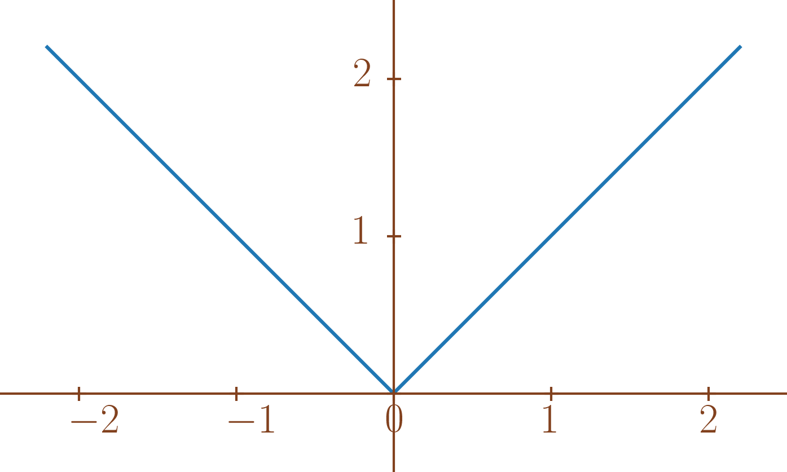
(Propriétés de la valeur absolue)
\(\forall a \in \mathbb{R}, |a| = 0 \iff a = 0\),
\(\forall a,b \in \mathbb{R}, |ab|=|a||b|\),
\(\forall a \in \mathbb{R}, a \leq |a|\),
\(\forall a \in \mathbb{R}, a = |a| \iff a \geq 0\),
\(\forall a,b \in \mathbb{R}, |a+b| \leq |a|+|b|\),
\(\forall a_1,\ldots,a_n \in \mathbb{R}\), \(\left|\sum_{k=1}^n a_k\right| \leq \sum_{k=1}^n |a_k|\),
\(\forall a\in \mathbb{R}, b\in \mathbb{R}^+\), \(|a| \leq b \iff -b \leq a \leq b\),
\(\left|a\right| = 0 \iff a \geq 0 \text{ et }a=\left|a\right|=0\).
Si \(a \geq 0\) et \(b \geq 0\), \(ab \geq 0\) donc \(\left|ab\right| = ab = \left|a\right|\left|b\right|\),
si \(a \geq 0\) et \(b < 0\), \(ab \leq 0\) donc \(\left|ab\right| = -ab = a(-b) = \left|a\right|\left|b\right|\),
si \(a < 0\) et \(b \geq 0\), \(ab \leq 0\) donc \(\left|ab\right| = -ab = (-a)b = \left|a\right|\left|b\right|\),
si \(a < 0\) et \(b < 0\), \(ab > 0\) donc \(\left|ab\right| = ab = (-a)(-b) = \left|a\right|\left|b\right|\).
Si \(a \geq 0\), \(\left|a\right| = a \geq a\) et si \(a < 0\), \(\left|a\right|=-a > 0 > a\).
Si \(a < 0\), \(\left|a\right| = -a \neq a\).
Si \(a \in \mathbb{R}\), la valeur absolue coïncide avec son module \(\sqrt{a^2+0^2} = \sqrt{a^2} = \left|a\right|\) et donc cela a été prouvé dans le cours sur les complexes.
Idem.
Soient \(a,b \in \mathbb{R}\),
\(|a+b| \leq |a|+|b| \iff |(a+b)^2|= |a+b|^2 \leq (|a|+|b|)^2 \iff ab \leq |ab|\).
Soit \(D\) une partie de \(\mathbb{R}\), non vide, on considère une fonction \(f\) de \(D\) dans \(\mathbb{R}\). \(D\) est le domaine de définition de \(f\) et on note
\[\begin{array}{lllll} f & : & D & \to & \mathbb{R}\\ & & x & \mapsto & f(x) \\ \end{array}.\]
On note parfois plus simplement \(f : x \in D \mapsto f(x) \in \mathbb{R}\) ou même \(f : x \in D \mapsto f(x)\).
On note \(f(D) := \{f(x)/x \in D\}\) l’ensemble des valeurs prises par \(f\).
Pour \(\begin{array}{lllll} f & : & \mathbb{R}& \to & \mathbb{R}\\ & & x & \mapsto & 1 \\ \end{array}\), \(f(\mathbb{R}) = \{1\}\).
On note \(\mathscr{F}(D,\mathbb{R})\) l’ensemble des fonctions de \(D\) dans \(\mathbb{R}\).
Soit \(f \in \mathscr{F}(D,\mathbb{R})\), on dit que \(f\) est non nulle s’il existe \(x_0 \in D\) tel que \(f(x_0) \neq 0\).
En général, on n’a pas : \(\forall x \in D, f(x) \neq 0\).
Soient \(f,g \in \mathscr{F}(D,\mathbb{R})\), on peut considérer les fonctions
\(\begin{array}{lllll} f +g& : & \mathbb{R}& \to & \mathbb{R}\\ & & x & \mapsto & f(x)+g(x) \\ \end{array}\) et \(\begin{array}{lllll} fg& : & \mathbb{R}& \to & \mathbb{R}\\ & & x & \mapsto & f(x)g(x) \\ \end{array}.\)
Soit \(f \in \mathscr{F}(D,\mathbb{R})\) et \(\alpha \in \mathbb{R}\), on peut considérer la fonction \[\begin{array}{lllll} \alpha f& : & \mathbb{R}& \to & \mathbb{R}\\ & & x & \mapsto & \alpha f(x) \\ \end{array}.\]
Soit \(h \in \mathscr{F}(D',\mathbb{R})\) (avec en général \(D' \neq D\)). En supposant \(f(D) \subset D'\), on peut considérer \(f(x)\) et \(h(f(x))\) pour \(x \in D\). On considère aussi la fonction composée de \(f\) par \(h\), notée \(h \circ f\) : \[\begin{array}{lllll} h\circ f& : & \mathbb{R}& \to & \mathbb{R}\\ & & x & \mapsto & h(f(x)) \\ \end{array}.\]
On dessine parfois
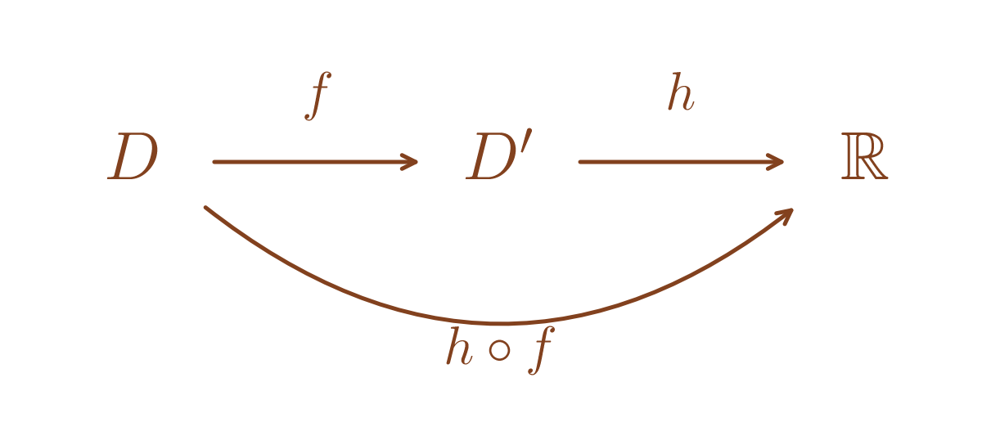
Avec \(\begin{array}{lllll} f & : & \left]-\frac{\pi}{2},\frac{\pi}{2}\right[ & \to & \mathbb{R}\\ & & x & \mapsto & \sin(x) \\ \end{array}\) et \(\begin{array}{lllll} h & : & ]-1,1[ & \to & \mathbb{R}\\ & & t & \mapsto & \frac{1}{\sqrt{1-t^2}} \\ \end{array}\),
on a bien \(f\left(\left]-\frac{\pi}{2},\frac{\pi}{2}\right[\right) \subset ]-1,1[\) et pour \(x \in \left]-\frac{\pi}{2},\frac{\pi}{2}\right[\), \(h(f(x)) = \frac{1}{\sqrt{1-\sin^2(x)}} = \frac{1}{\sqrt{\cos^2(x)}} = \frac{1}{\cos(x)}\) car \(\cos\) est positif sur \(\left]-\frac{\pi}{2},\frac{\pi}{2}\right[\).
(Fonction paire/impaire) Soit \(f \in \mathscr{F}(D,\mathbb{R})\) avec : pour tout \(x \in D, -x \in D\).
\(f\) est dite paire si : \(\forall x \in D, f(-x) = f(x)\),
\(f\) est dite impaire si : \(\forall x \in D, f(-x) = -f(x)\).
⚠️ Cela n’a pas de sens de parler de fonction paire ou impaire sur \([0,1]\), car on n’a pas "pour tout \(x \in D, -x \in D\)".
(Operations et fonctions paires/impaires) Soient \(f,g \in \mathscr{F}(D,\mathbb{R})\), \(\alpha \in \mathbb{R}\),
Si \(f \text{ et }g\) sont paires, \(\alpha f\), \(f+g\) et \(fg\) sont paires,
Si \(f \text{ et }g\) sont impaires, \(\alpha f\) et \(f+g\) sont impaires tandis que \(fg\) est paire.
Soit \(x \in D\), \[\begin{aligned} (\alpha f)(-x) & = \alpha f(-x) = \alpha f(x) = (\alpha f)(x) \\ (f+g)(-x) & = f(-x)+g(-x) = f(x) + g(x) = (f+g)(x) \\ (fg)(-x) & = f(-x)g(-x) = f(x)g(x) = (fg)(x) \\ \end{aligned}\]
Soit \(x \in D\), \[\begin{aligned} (\alpha f)(-x) & = \alpha f(-x) = \alpha(- f(x)) = -\alpha f(x) = -(\alpha f)(x) \\ (f+g)(-x) & = f(-x)+g(-x) = -f(x) + (-g(x))=-(f(x)+g(x)) = -(f+g)(x) \\ (fg)(-x) & = f(-x)g(-x) = -f(x)(-g(x)) = f(x)g(x) = (fg)(x) \\ \end{aligned}\]
Soit \((O,\overrightarrow{i},\overrightarrow{j})\), repère orthonormé du plan et \((C) = \{(x,f(x)) / x\in D\}\), la courbe de \(f\).
Si \(f\) est paire, \((C)\) est symétrique par rapport à \((O,\overrightarrow{j})\). Plus précisément, pour \(x \in D\), le point \((-x,f(-x))\) est le symétrique de \((x,f(x))\) par rapport à \((O,\overrightarrow{j})\).
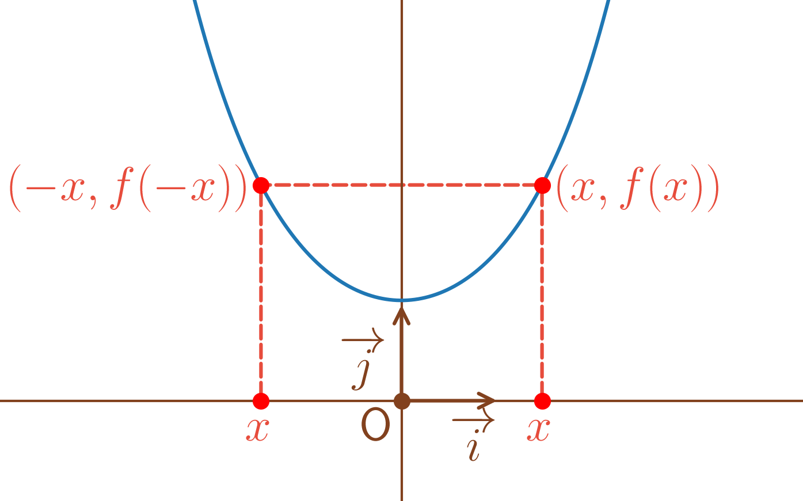
Si \(f\) est impaire, \((C)\) est symétrique par rapport à \(O\). Plus précisément, pour \(x \in D\), le point \((-x,f(-x))\) est le symétrique de \((x,f(x))\) par rapport à \(O\).
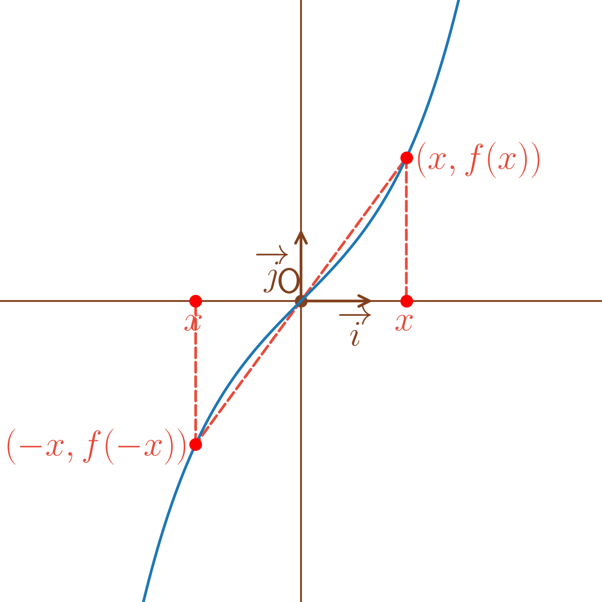
Soit \(f \in \mathscr{F}(\mathbb{R},\mathbb{R})\) et \(T \in \mathbb{R}^{+\star}\) \(f\) est dite \(T\)-périodique si \[\forall x \in \mathbb{R}, f(x+T) = f(x).\]
Si \(f\) est \(T\)-périodique, on a : pour tout \(x \in \mathbb{R}, f(x-T) = f(x)\).
En effet, \(f(x) = f((x-T)+T) = f(x)\).
On a même : pour tout \(k \in \mathbb{Z}, f(x+kT) = f(x)\)
(Périodicité et opérations) Soient \(f,g \in \mathscr{F}(\mathbb{R},\mathbb{R})\) \(T\)-périodiques et \(\alpha \in \mathbb{R}\) alors \(\alpha f, f+g\) et \(fg\) sont \(T\)-périodiques.
Soit \(x \in \mathbb{R}\),
\((\alpha f)(x+T) = \alpha f(x+T) = \alpha f(x) = (\alpha f)(x)\),
\((f+g)(x+T) = f(x+T) + g(x+T) = f(x)+g(x) = (f+g)(x)\),
\((fg)(x+T) = f(x+T)g(x+T) = f(x)g(x) = (fg)(x)\).
Soit \((O,\overrightarrow{i},\overrightarrow{j})\), repère orthonormé du plan et \((C) = \{(x,f(x)) / x\in D\}\), la courbe de \(f\). Si \(f\) est \(T\)-périodique, en notant \((C') = \{(x+T,f(x)) / x\in D\}\) la translatée de \((C)\) par le vecteur \(T\overrightarrow{i}\) alors \((C')=(C)\). En effet,
Si \((x,f(x)) \in (C)\), \((x,f(x)) = ((x-T)+T,f(x-T)) \in (C')\).
Si \((x+T,f(x)) \in (C')\), \((x+T,f(x)) = (x+T,f(x+T)) \in (C)\).
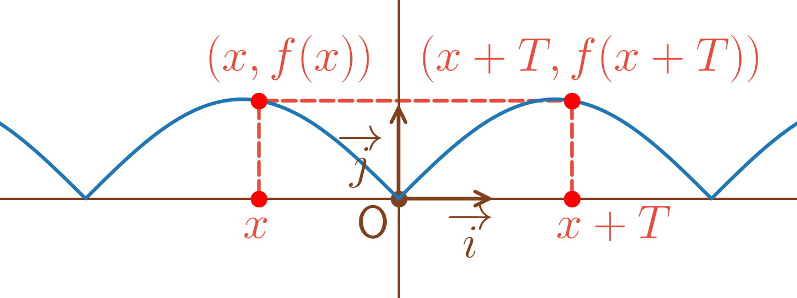
(Fonctions croissantes/décroissantes) Soit \(f \in \mathscr{F}(D,\mathbb{R})\),
\(f\) est dite croissante sur \(D\) si \[\forall x,y \in D, x \leq y \Longrightarrow f(x) \leq f(y),\]
\(f\) est dite strictement croissante sur \(D\) si \[\forall x,y \in D, x < y \Longrightarrow f(x) < f(y),\]
\(f\) est dite décroissante sur \(D\) si \[\forall x,y \in D, x \leq y \Longrightarrow f(x) \geq f(y),\]
\(f\) est dite strictement décroissante sur \(D\) si \[\forall x,y \in D, x < y \Longrightarrow f(x) > f(y).\]
(Croissance et opérations) Soient \(f,g \in \mathscr{F}(D,\mathbb{R})\) croissantes sur \(D\), alors
\(f+g\) est croissante sur \(D\),
⚠️ en général, \(fg\) n’est pas croissante sur \(D\),
si de plus \(f\) et \(g\) sont positives sur \(D\), \(fg\) est croissante sur \(D\).
Soient \(x,y \in D\) tels que \(x \leq y\) alors \[(f+g)(x) = f(x) + g(x) \leq f(y) + g(y) = (f+g)(y).\]
\(\begin{array}{lllll} f & : & \mathbb{R}& \to & \mathbb{R}\\ & & x & \mapsto & x \\ \end{array}\) et \(\begin{array}{lllll} g & : & \mathbb{R}& \to & \mathbb{R}\\ & & x & \mapsto & x \\ \end{array}\) sont croissantes sur \(\mathbb{R}\) mais pas \(\begin{array}{lllll} fg & : & \mathbb{R}& \to & \mathbb{R}\\ & & x & \mapsto & x^2 \\ \end{array}.\)
Soient \(x,y \in D\) tels que \(x \leq y\) alors \[(fg)(x) = f(x)g(x) \underbrace{\leq}_{g(x) \geq 0 \text{ et }f(x) \leq f(y)} f(y)g(x) \underbrace{\leq}_{f(y) \geq 0 \text{ et }g(x) \leq g(y)} f(y)g(y) = (fg)(y).\]
(Croissance et composition) Soit \(f \in \mathscr{F}(D,\mathbb{R})\) et \(h\in \mathscr{F}(D',\mathbb{R})\) tel que \(f(D) \subset D'\). Si \(f\) et \(h\) sont croissantes alors \(h\circ f\) est croissante.
Soient \(x,y \in D\) tels que \(x \leq y\) alors \(f(x) \leq f(y)\) par croissance de \(f\) donc \(h(f(x)) \leq h(f(y))\) par croissance de \(h\).
(Fonctions majorées, minorées, bornées) Soit \(f \in \mathscr{F}(D,\mathbb{R})\),
\(f\) est majorée sur \(D\) s’il existe \(M \in \mathbb{R}\) tel que \[\forall x \in D, f(x) \leq M,\]
\(f\) est minorée sur \(D\) s’il existe \(m \in \mathbb{R}\) tel que \[\forall x \in D, f(x) \geq m,\]
\(f\) est bornée sur \(D\) si \(f\) est majorée et minorée sur \(D\) ie il existe \(m,M \in \mathbb{R}\) tel que \[\forall x \in D, m \leq f(x) \leq M.\]
Soit \(f \in \mathscr{F}(D,\mathbb{R})\), \[\text{$f$ est bornée sur $D$ $\iff \exists M_0 \in \mathbb{R}^+, \forall x \in D, |f(x)|\leq M_0$}\]
s’il existe \(m,M \in \mathbb{R}\) tel que \[\forall x \in D, m \leq f(x) \leq M.\] alors avec \(M_0 = \max(|m|,|M|)\), \[\forall x \in D, -M_0 \leq -|m| \leq m \leq f(x)\] et \[\forall x \in D, f(x) \leq M \leq |M| \leq M_0\] donc \[\forall x \in D, -M_0 \leq a \leq M_0 \iff |f(x)| \leq M_0.\]
On a donc \(\forall x \in D, -M_0 \leq f(x) \leq M_0.\) donc \(m = -M_0, M = M_0\) conviennent.
(Bornage et opérations) Soient \(f,g \in \mathscr{F}(D,\mathbb{R})\) bornées sur \(D\) et \(\alpha \in \mathbb{R}\) alors \(\alpha f, f+g, fg\) sont bornées sur \(D\).
Soient \(M_0\in \mathbb{R}^+\) et \(M_1 \in \mathbb{R}^+\) tels que \[\begin{aligned} \forall x \in D, |f(x)| & \leq M_0 \\ |g(x)| & \leq M_1 \\ \end{aligned}\]
alors pour \(x \in D\),
\(|(\alpha f)(x)| = |\alpha| |f(x)| \leq |\alpha|M_0\),
\(|(f+g)(x)| \underbrace{\leq}_{\text{par inégalité triangulaire}} |f(x)| +|g(x)|\leq M_0+M_1\),
\(|(fg)(x)| \leq |f(x)|M_1\leq M_0M_1\).
(Intervalle de \(\mathbb{R}\)) Un intervalle de \(\mathbb{R}\) est un ensemble sous la forme
\(I = \mathbb{R}\),
\(I = [a,+\infty[\) ou \(I = ]a,+\infty[\) avec \(a \in \mathbb{R}\),
\(I = -]\infty,b]\) ou \(I = -]\infty,b[\) avec \(b \in \mathbb{R}\),
\(I = [a,b]\) ou \(I = [a,b[\) ou \(I = ]a,b[\) ou \(I = ]a,b]\).
Un tel ensemble vérifie : si \(c,d \in I\), \([c,d] \subset I\).
(Dérivabilité en \(x_0\)) Soit \(f : I \to \mathbb{R}\) avec \(I\) intervalle de \(\mathbb{R}\), non réduit à un seul élément. Soit \(x_0 \in I\), \(f\) est dérivable en \(x_0\) s’il existe \(\ell \in \mathbb{R}\) tel que \[\frac{f(x_0+h)-f(x_0)}{h} \underset{h \longrightarrow 0}{\longrightarrow} \ell.\] \(\frac{f(x_0+h)-f(x_0)}{h}\) est le taux d’accroissement de \(f\) en \(x_0\) par \(h\). \(\ell\) est alors appelé la dérivée de \(f\) en \(x_0\) noté \(f'(x_0)\).
Si \(f\) est dérivable en tout point de \(I\), on dit que \(f\) est dérivable sur \(I\).
Il est équivalent d’étudier la limite \(\lim_{h \longrightarrow 0} \frac{f(x_0+h)-f(x_0)}{h}\) et la limite \(\lim_{x \longrightarrow x_0} \frac{f(x)-f(x_0)}{x-x_0}\) en posant \(h = x-x_0\).
Soit \(f : I \to \mathbb{R}\) et \(x_0 \in I\) tel que \(f\) est dérivable en \(x_0\).
Alors, \(f\) est continue en \(x_0\).
Nous détaillerons ce point dans un prochain chapitre mais si \(f\) est dérivable en \(x_0\) alors \(f\) est continue en \(x_0\).
En effet, \(\frac{f(x_0+h)-f(x_0)}{h} \underset{h \longrightarrow 0}{\longrightarrow} f'(x_0)\) donc \(f(x_0+h)-f(x_0) \underset{h \longrightarrow 0}{\longrightarrow} 0\) et \(f(x_0+h) \underset{h \longrightarrow 0}{\longrightarrow} f(x_0)\).
En revanche, la réciproque est fausse.
(Fonction continue non dérivable en un point) \(\begin{array}{lllll} f & : & \mathbb{R}& \to & \mathbb{R}\\ & & x & \mapsto & |x| \\ \end{array}\) est continue sur \(\mathbb{R}\) mais en revanche elle n’est pas dérivable en \(0\). En effet,
pour \(h > 0\), \(\frac{f(0+h)-f(0)}{h} = \frac{|h|}{h} = \frac{h}{h} = 1 \underset{h \longrightarrow 0}{\longrightarrow} 1\)
mais pour \(h < 0\), \(\frac{f(0+h)-f(0)}{h} = \frac{|h|}{h} = \frac{-h}{h} = -1 \underset{h \longrightarrow 0}{\longrightarrow} -1\).
Soit \(f : I \to \mathbb{R}\) une fonction dérivable en un point \(x_0 \in I\).
Dans un repère orthonormé \((O,\vec{i},\vec{j})\), on considère \((C)=\{ M_x = (x,f(x)) / x \in I \}.\) la courbe représentative de \(f\). Pour tout \(h \neq 0\) tel que \(x_0+h \in I\), on note \(\mathscr{D}_h\) la droite passant par les points \(M_{x_0}\) et \(M_{x_0+h}\). Le coefficient directeur de \(\mathscr{D}_h\) est \[\frac{f(x_0+h)-f(x_0)}{h}.\] Une équation de \(\mathscr{D}_h\) est donc \[y = \frac{f(x_0+h)-f(x_0)}{h}(x-x_0)+f(x_0).\] Comme \(f\) est dérivable en \(x_0\), on a \[\lim_{h \to 0} \frac{f(x_0+h)-f(x_0)}{h} = f'(x_0).\]
La droite limite, d’équation \[y = f'(x_0)(x-x_0) + f(x_0),\] est appelée droite tangente à la courbe \((C)\) au point d’abscisse \(x_0\).
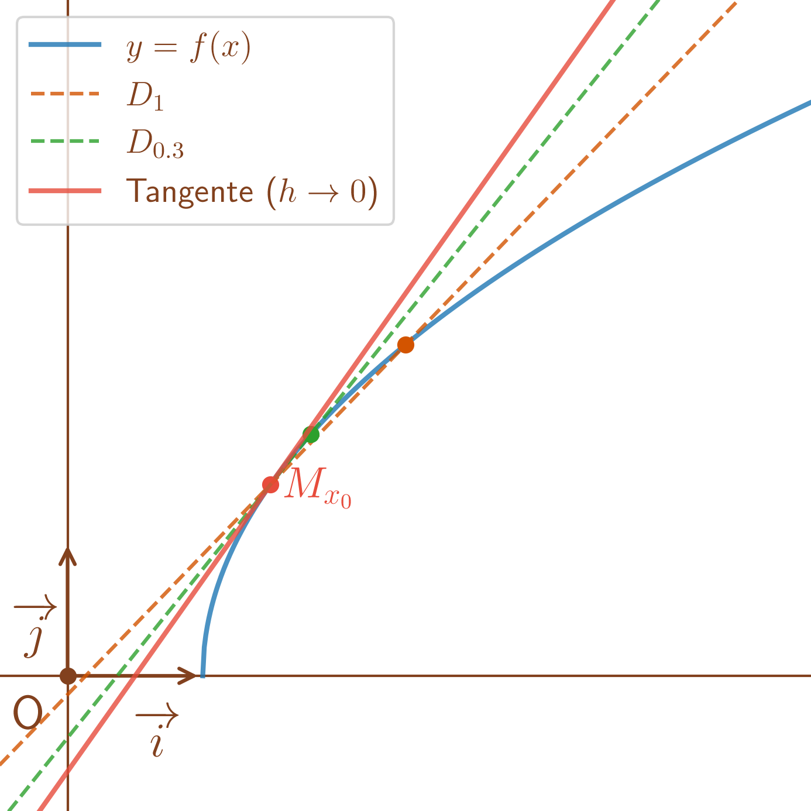
(Tangente et non-dérivabilité) Parmi tant d’autres, deux cas se présentent pour des fonctions non dérivables en un certain point. La fonction valeur absolue "admet deux tangentes en \(0\)" (voir l’exemple [ex:valeur_aboslue_non_derivable]) tandis que la fonction racine carrée admet une "tangente verticale" en \(0\) (qui n’admet donc pas de coefficient directeur).
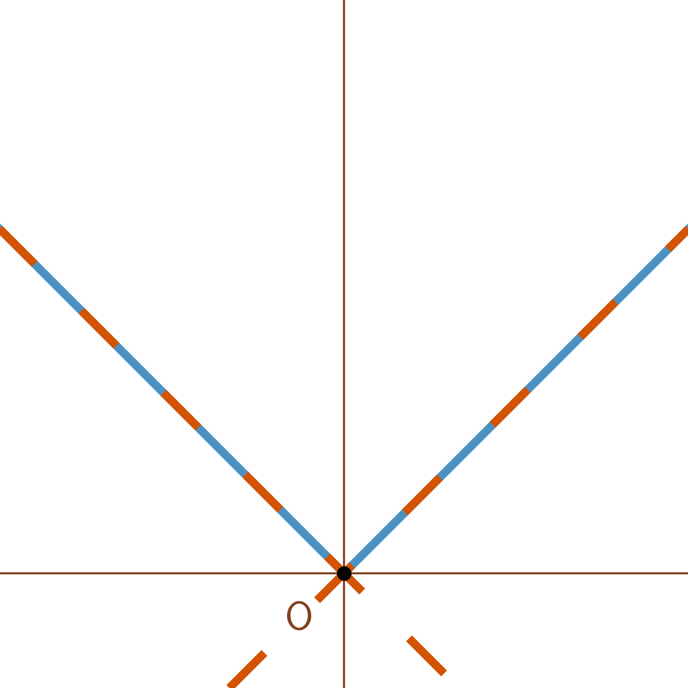 |
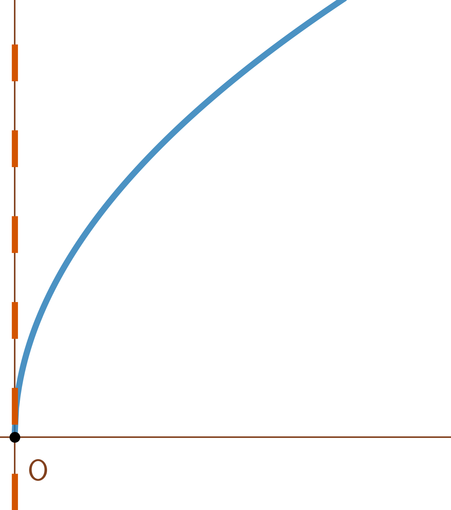 |
(Opérations sur les fonctions dérivables) Soient \(u,v \in \mathscr{F}(I,\mathbb{R})\) dérivables en \(x_0 \in I\) \(\alpha \in \mathbb{R}\) et \(n \in \mathbb{N}^\star\) alors \(\alpha u, u+v\), \(uv\) et \(u^n\) sont dérivables en \(x_0\) avec
\((\alpha u)'(x_0)=\alpha u'(x_0)\),
\((u+v)'(x_0) = u'(x_0)+v'(x_0)\),
\((uv)'(x_0) = u'(x_0)v(x_0)+u(x_0)v'(x_0)\),
\((u^n)'(x_0) = nu'(x_0)u^{n-1}(x_0)\)
Dans un chapitre ultérieur,
dans un chapitre ultérieur,
dans un chapitre ultérieur,
Prouvons ce résultat par récurrence. On note \(\mathscr{P}(n) : "u^n \text{ est dérivable en $x_0$ avec $(u^n)'(x_0) = nu'(x_0)u^{n-1}(x_0)$}"\) pour \(n\in \mathbb{N}^\star\).
INITIALISATION : Pour \(n= 1\), \(nu'(x_0)u^{n-1}(x_0) = u'(x_0)\).
HÉRÉDITÉ : Soit \(n \in \mathbb{N}^\star, \geq 2\), supposons \(\mathscr{P}(n-1)\).
On a \(u^n = u u^{n-1}\) donc par la propriété \(3.\), \(u^n\) est dérivable en \(x_0\) avec
\[\begin{aligned} (u^n)'(x_0) & = u'(x_0)u^{n-1}(x_0) + u(x_0)(u^{n-1})'(x_0)\\ & \underbrace{=}_{\text{par $\mathscr{P}(n-1)$}} u'(x_0)u^{n-1}(x_0) + u(x_0)(n-1)u'(x_0)u^{n-2}(x_0) \\ & = u'(x_0)u^{n-1}(x_0)+(n-1)u'(x_0)u^{n-1}(x_0) \\ & = nu'(x_0)u^{n-1}(x_0) \end{aligned}\]
CONCLUSION : \(\forall n \in \mathbb{N}, (u^n)'(x_0) = nu'(x_0)u^{n-1}(x_0)\).
(Quotients et fonctions dérivables) Soient \(u,v \in \mathscr{F}(I,\mathbb{R})\) dérivables en \(x_0 \in I\) telles que \(v\) ne s’annule pas sur \(I\) alors \(\frac{1}{v}\) et \(\frac{u}{v}\) sont dérivables en \(x_0\) avec
\(\left(\frac{1}{v}\right)'(x_0)=-\frac{v'(x_0)}{v(x_0)^2}\),
\(\left(\frac{u}{v}\right)'(x_0)=\frac{u'(x_0)v(x_0)-u(x_0)v'(x_0)}{v(x_0)^2}\).
Dans un chapitre ultérieur,
\(\frac{u}{v} = u\frac{1}{v}\) donc par les propriétés précédentes, \[\left(\frac{u}{v}\right)'(x_0) = u'(x_0)\left(\frac{1}{v}\right)(x_0) +u(x_0)\left(\frac{1}{v}\right)'(x_0) = \frac{u'(x_0)}{v(x_0)} - \frac{u(x_0)v'(x_0)}{v^2(x_0)} = \frac{u'(x_0)v(x_0)-u(x_0)v'(x_0)}{v^2(x_0)}\]
Exercice — Calculer la dérivée en \(x_0\) de \(\begin{array}{lllll} f & : & \mathbb{R}^\star & \to & \mathbb{R}\\ & & x & \mapsto & \frac{1}{x^n} \\ \end{array}\).
Corrigé — \(f = \frac{1}{v}\) avec \(v = u^n\) où \(u(x) = x\). Donc \[f'(x_0) = \frac{-v'(x_0)}{v(x_0)^2} = -n\frac{x_0^{n-1}}{x_0^{2n}} = -nx_0^{-n-1}.\]
Soient \(f : I \to \mathbb{R}\) et \(g : J \to \mathbb{R}\) tels que \(f(I) \subset J\), \(f\) est dérivable en \(x_0\) et \(g\) est dérivable en \(f(x_0)\) alors \(g \circ f\) est dérivable en \(x_0\) avec \[(g\circ f)'(x_0) = g'(f(x_0))f'(x_0).\]
Dans un chapitre ultérieur.
Exercice — Calculer la dérivée de \(\begin{array}{lllll} h & : & \mathbb{R}& \to & \mathbb{R}\\ & & x & \mapsto & \sin(x^3+x) \\ \end{array}\) en tout point \(x_0 \in \mathbb{R}\).
Corrigé — \(h = g\circ f\) avec \(g : y \in \mathbb{R}\mapsto \sin(y)\) et \(f : x \in \mathbb{R}\mapsto x^3+x\) dérivables sur \(\mathbb{R}\). Donc \(h\) est dérivable sur \(\mathbb{R}\) avec pour tout \(x_0 \in \mathbb{R}\), \[h'(x_0) = g'(f(x_0))f'(x_0) = \cos(x_0^3+x_0)(3x_0+1).\]
Exercice — Calculer la dérivée de \(\begin{array}{lllll} h & : & \mathbb{R}^{\star}& \to & \mathbb{R}\\ & & x & \mapsto & \ln(x^2+1)\cos\left(\frac{1}{x}\right) \\ \end{array}\) en tout point \(x_0 \in \mathbb{R}^\star\).
Corrigé — \(h = uv\) avec \(u : x \in \mathbb{R}\mapsto \ln(x^2+1)\) et \(v : x \in \mathbb{R}^\star \mapsto \cos\left(\frac{1}{x}\right)\).
De plus, \(u = g_1 \circ f_1\) avec \(g_1 : y \in \mathbb{R}^{+\star}\mapsto \ln(y)\), dérivable sur \(\mathbb{R}^{+\star}\) et \(f_1 : x \in \mathbb{R}^\star \mapsto x^2+1\), à valeurs dans \(\mathbb{R}^{+\star}\) et dérivable sur \(\mathbb{R}^\star\) donc \(u\) est dérivable sur \(\mathbb{R}^\star.\)
Aussi, \(v = g_2 \circ f_2\) avec \(g_2 : y \in \mathbb{R}\mapsto \cos(y)\), dérivable sur \(\mathbb{R}\) et \(f_2 : x \in \mathbb{R}^\star \mapsto \frac{1}{x}\) dérivable sur \(\mathbb{R}^\star\) donc \(v\) est dérivable sur \(\mathbb{R}^\star.\)
On a donc
\[\begin{aligned} h'(x_0) & = (uv)'(x_0) \\ & = u'(x_0)v(x_0) + u(x_0)v'(x_0) \\ & = g_1'(f_1(x_0))f_1'(x_0)v(x_0)+u(x_0)g_2'(f_2(x_0))f_2'(x_0) \\ & = \frac{2x}{x^2+1}\cos\left(\frac{1}{x}\right) +\ln(x^2+1)\frac{\sin\left(\frac{1}{x}\right)}{x^2}. \end{aligned}\]
(Monotonie et dérivation) Soit \(f\) une fonction dérivable sur \(I\) alors
\(f\) croissante sur \(I\) \(\iff\) \(\forall x \in I, f'(x) \geq 0\),
\(f\) décroissante sur \(I\) \(\iff\) \(\forall x \in I, f'(x) \leq 0\),
\(f\) constante sur \(I\) \(\iff\) \(\forall x \in I, f'(x) = 0\),
Dans un chapitre ultérieur.
(Stricte monotonie et dérivation) Soit \(f\) une fonction dérivable sur \(I\) alors
Si \(\forall x \in I, f'(x) > 0\), \(f\) est strictement croissante sur \(I\),
Si \(\forall x \in I, f'(x) < 0\), \(f\) est strictement décroissante sur \(I\).
Dans un chapitre ultérieur.
On peut avoir \(f\) dérivable strictement croissante sur \(I\) mais \(f'\) s’annule sur \(I\). Par exemple \(f : x \in \mathbb{R}\mapsto x^3\) est strictement croissante sur \(\mathbb{R}\) mais \(f'(0) = 0\).
Soit \(f : I:=I_1 \cup I_2 \to \mathbb{R}\) avec \(I_1, I_2\) intervalles disjoints de \(\mathbb{R}\). Alors \(f'\) positive sur \(I\) implique \(f\) croissante sur \(I_1\) et \(f\) croissante sur \(I_2\) mais en général pas \(f\) croissante sur \(I\).
Pour \(f : x \in \mathbb{R}^{+\star} \cup \mathbb{R}^{-\star} \mapsto \frac{1}{x} \in \mathbb{R}\), \(\forall x \in \mathbb{R}^\star, f'(x) = -\frac{1}{x^2} < 0\) et \(f\) est bien strictement décroissante sur \(\mathbb{R}^{+\star}\) et strictement décroissante sur \(\mathbb{R}^{-\star}\). En revanche, \(f\) n’est pas strictement décroissante sur \(\mathbb{R}\) car \(f(1) = 1 > -1 = f(-1)\).
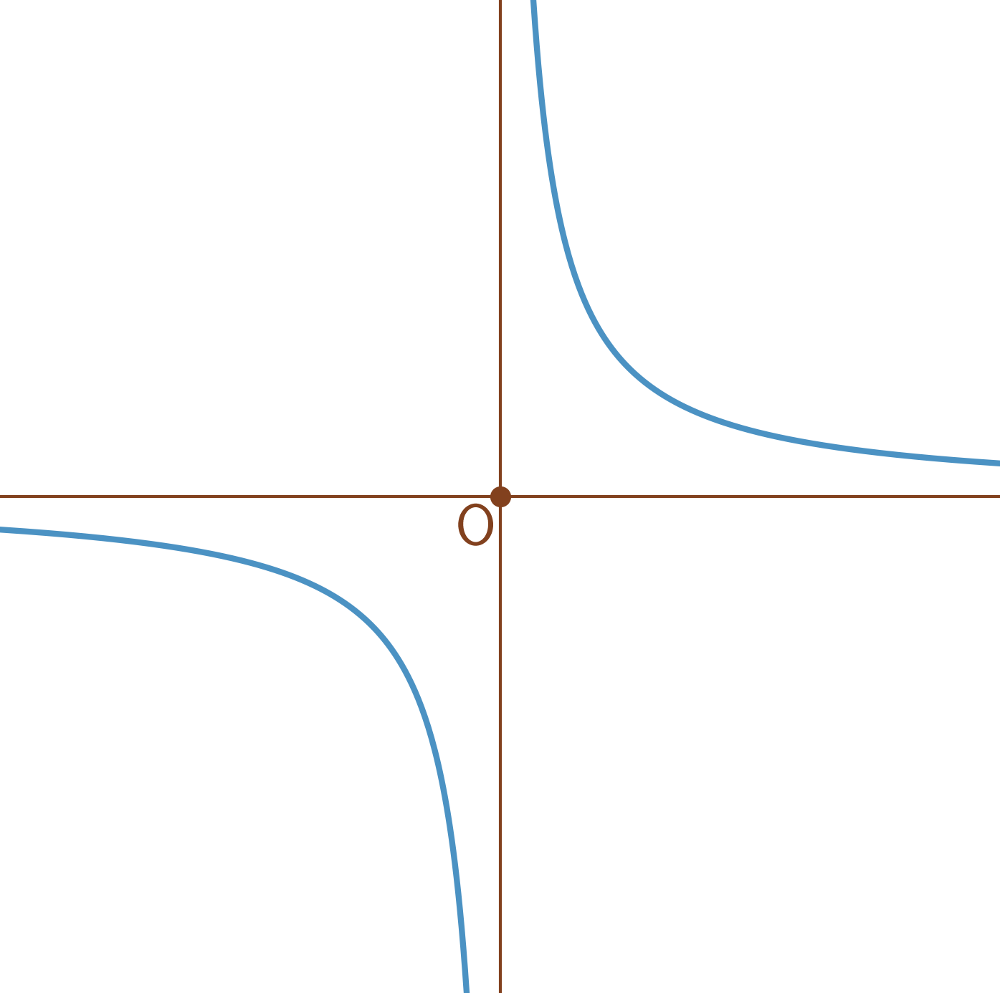
(Fonction bijective) Une fonction \(f : I \to J\) est dite bijective si \[\forall y \in J, \exists! x \in I / f(x) = y.\]
\(f : x \in \mathbb{R}\to x \in \mathbb{R}\) est bijective,
\(f : x \in \mathbb{R}\to x^2 \in \mathbb{R}\) n’est pas bijective car \(f(1)=f(-1)\),
\(f : x \in \mathbb{R}^+ \to x^2 \in \mathbb{R}\) n’est pas bijective car \(-1 \in \mathbb{R}\) mais il n’existe pas \(x_0 \in \mathbb{R}^{+}\) tel que \(f(x_0) = -1\),
\(f : x \in \mathbb{R}^+ \to x^2 \in \mathbb{R}^+\) est bijective.
Soit \(f : I \to \mathbb{R}\) avec \(f\) strictement monotone sur \(I\). En posant \(J = f(I)\), \(f\) définit une bijection entre \(I\) et \(J\).
Soit \(y \in f(I)\), alors il existe \(x \in I\) tel que \(y=f(x)\). Supposons \(x' \in I\) tel que \(x \neq x'\) et \(y=f(x')\),
Si \(x < x'\) alors \(f(x) < f(x')\) (ou \(f(x) > f(x')\)) si \(f\) est strictement croissante (ou strictement décroissante), ce qui est contradictoire.
Si \(x' < x\) alors \(f(x') < f(x)\) (ou \(f(x') > f(x)\)) si \(f\) est strictement croissante (ou strictement décroissante), ce qui est contradictoire.
Soit fonction \(f : I \to J\) bijective, on définit sa fonction réciproque \(\begin{array}{lllll} f^{-1} & : & J & \to & I \\ & & y & \mapsto & \text{l'unique $x \in I$ tel que $f(x) = y$} \\ \end{array}.\)
On a alors pour tout \(x \in I\), \(f^{-1}(f(x)) = x\) et pour tout \(y \in J\), \(f(f^{-1}(y)) = y\).
Soit \(f : I \to J\) avec \(f\) strictement monotone sur \(I\) et \(J = f(I)\) alors \(f^{-1}\) est strictement monotone sur \(J\), de même monotonie que \(f\).
Si \(f\) est strictement croissante sur \(I\), si \(y < y'\), alors par l’absurde, si \(f^{-1}(y) \geq f^{-1}(y')\), \[f(f^{-1}(y)) \geq f(f^{-1}(y')) \Longrightarrow y \geq y' \text{ ce qui est absurde}\]
Donc \(f^{-1}(y) < f^{-1}(y')\) et \(f^{-1}\) est strictement croissante sur \(J\).
Si \(f\) est strictement décroissante sur \(I\), si \(y < y'\), alors par l’absurde, si \(f^{-1}(y) \leq f^{-1}(y')\), \[f(f^{-1}(y)) \leq f(f^{-1}(y')) \Longrightarrow y \leq y' \text{ ce qui est absurde}\]
Donc \(f^{-1}(y) > f^{-1}(y')\) et \(f^{-1}\) est strictement décroissante sur \(J\).
Si \(f\) est continue sur \(I\) et bijective, \(J = f(I)\) est aussi un intervalle de \(\mathbb{R}\) et \(f^{-1}\) est continue sur \(J\).
Dans un chapitre ultérieur.
Soit \(f : I \to J\) bijective et \(x_0 \in I\) tel que \(f'(x_0) \neq 0\) alors \(f^{-1}\) est dérivable en \(f(x_0)\) \[\left(f^{-1}\right)'(f(x_0)) = \frac{1}{f'(x_0))}.\]
La fait que \(f^{-1}\) est dérivable sera prouvé dans un chapitre ultérieur. Supposant cette dérivabilité, on peut tout de même prouver la formule :
\[f^{-1}(f(x_0)) = x_0\]
Donc en utilisant la formule de la dérivation de la composée,
\[\left(f^{-1}\right)'(f(x_0))f'(x_0) = 1 \iff \left(f^{-1}\right)'(f(x_0)) = \frac{1}{f'(x_0))}.\]
Soit \(f : I \to J\) bijective. Soit \(y_0 \in J\), il existe un unique \(x_0 \in I\) tel que \(f(x_0) = y_0\). Si \(f\) est dérivable en \(x_0\) et \(f'(x_0) \neq 0\) alors \(f^{-1}\) est dérivable en \(y_0\) et \[\left(f^{-1}\right)'(y_0) = \frac{1}{f'(f^{-1}(y_0))}.\]
Il suffit de réécrire \(\left(f^{-1}\right)'(f(x_0)) = \frac{1}{f'(x_0))}\), avec \(y_0 = f(x_0)\) et \(x_0 = f^{-1}(y_0)\).
Soit \(f : I \to J\) une fonction bijective.
Dans un repère orthonormé \((O,\vec{i},\vec{j})\), on considère \((C)=\{ M_x = (x,f(x)) \mid x \in I \}\) la courbe représentative de \(f\) et \((C')=\{ M'_y = (y,f^{-1}(y)) \mid y \in J \}\) la courbe représentative de \(f^{-1}\).
On remarque que \((C')=\{ M'_{f(x)} = (f(x),x) \mid x \in I \}\) et donc que \((C')\) est le symétrique de \((C)\) par rapport à la droite d’équation \(y=x\).
Sachant que la pente de la tangente à \((C)\) en \(x_0\) a pour équation \(\overrightarrow{i}+f'(x_0)\overrightarrow{j}\), la droite symétrique par rapport à \(y=x\) est \(f'(x_0)\overrightarrow{i}+\overrightarrow{j}\) qui a aussi pour équation \(\overrightarrow{i}+\frac{1}{f'(x_0)}\overrightarrow{j}\) (en divisant par \(f'(x_0)\)).
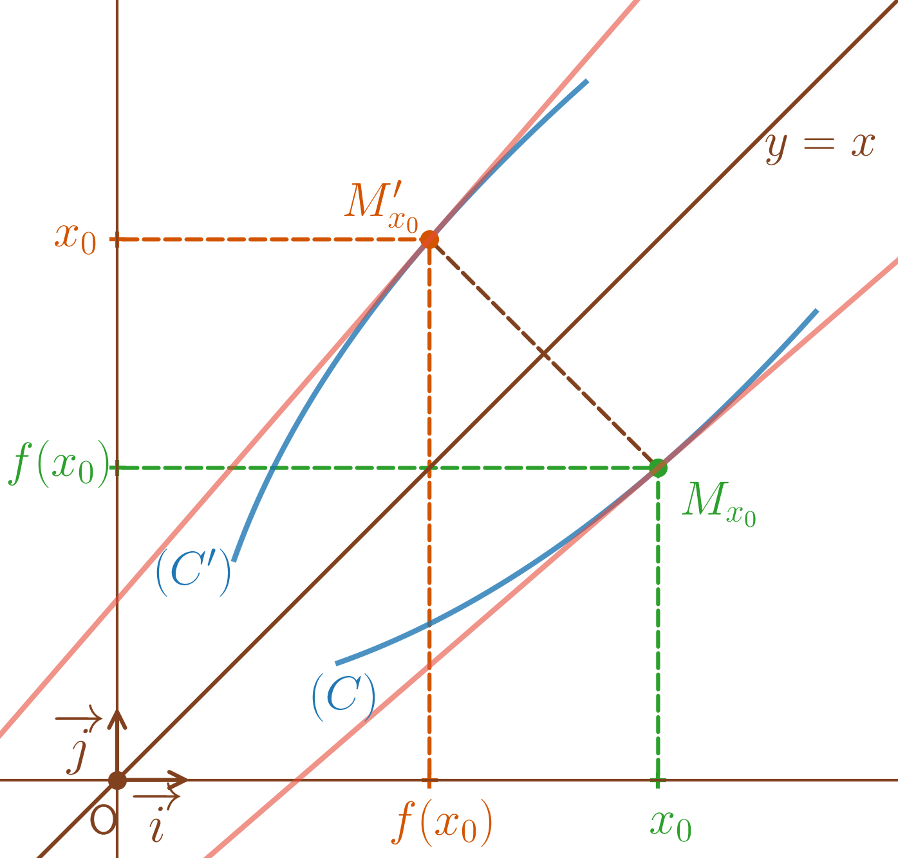
(Et si \(f'(x_0) = 0\) ?)
Si \(f'(x_0) = 0\), \(f\) admet une tangente horizontale en \(x_0\) et \(f^{-1}\) admet donc une tangente verticale en \(f(x_0)\) (par symétrie par rapport à \(y=x\)) et est donc non dérivable en \(f(x_0)\).
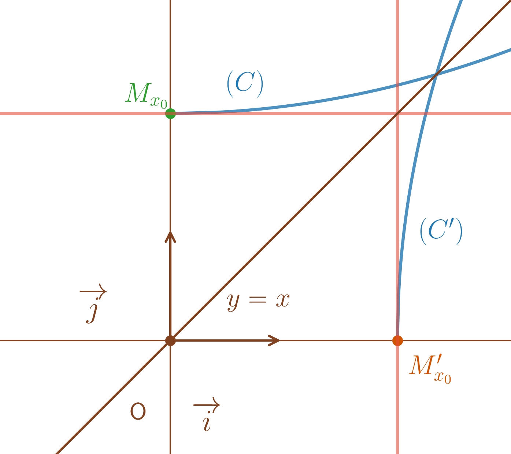
Soit \(f : [a,b] \to \mathbb{R}\), continue, on peut considérer son intégrale \(\int_a^b f(x)dx\) qui correspond géométriquement à l’aire algébrique sous la courbe de \(f\) entre \(a\) et \(b\) (en unités d’aires).
De plus, \(f\) admet une unique primitive qui s’annule en \(a\) qui s’écrit \(F : x \in [a,b] \mapsto \int_a^x f(t)dt\). Toute autre primitve s’écrit alors \(x \in [a,b] \mapsto \int_a^x f(t)dt + C\) avec une constante \(C \in \mathbb{R}\).
Calculer une primitive de \(f\) revient donc à calculer une intégrale de \(f\) et les méthodes présentées ci-dessous peuvent être utilisées.
Nous reverrons ces notions plus précisément dans un chapitre ultérieur.
(Intégration par parties) Soient \(u : I \to \mathbb{R}\) et \(v: I \to \mathbb{R}\) dérivables sur \(I\) avec \(u',v'\) continues et \(a, b \in I\) alors \[\int_a^b u'(x)v(x)dx = [u(x)v(x)]_a^b - \int_a^b u(x)v'(x)dx.\]
\[\int_a^b (uv)'(x)dx = [u(x)v(x)]_a^b.\]
Or, \((uv)' = u'v+uv'\) donc \[\begin{aligned} & \int_a^b (uv)'(x)dx = \int_a^b u'(x)v(x)dx+ \int_a^b u(x)v'(x)dx=[u(x)v(x)]_a^b \\ & \iff \int_a^b u'(x)v(x)dx = [u(x)v(x)]_a^b - \int_a^b u(x)v'(x)dx. \end{aligned}\]
Exercice — Calculer \(A = \int_1^2 \frac{\ln(x)}{x^2}dx\).
Corrigé — \(A = \int_1^2 u'(x)v(x)dx\) avec \(\left\{\begin{array}{ll} u(x) & = -\tfrac{1}{x} \\ v(x) & = \ln(x) \end{array}\right. \Rightarrow \left\{\begin{array}{ll} u'(x) & = \tfrac{1}{x^2} \\ v'(x) & = \tfrac{1}{x} \end{array}\right.\)
Donc par intégration par parties,
\[A = \left[-\frac{\ln x}{x}\right]_1^2 + \int_1^2 \frac{1}{x^2}dx = \ln(1)-\frac{\ln(2)}{2} +\left[-\frac{1}{x}\right]_1^2 = -\frac{\ln(2)}{2}-\frac{1}{2}+1=-\frac{\ln(2)}{2}+\frac{1}{2}.\]
Exercice — Calculer \(B = \int_2^3 \ln(x)dx\).
Corrigé — \(B = \int_2^3 1\times \ln(x)dx = \int_2^3 u'(x)v(x)dx\) avec \(\left\{\begin{array}{ll} u(x) & = x \\ v(x) & = \ln(x) \end{array}\right. \Rightarrow \left\{\begin{array}{ll} u'(x) & = 1 \\ v'(x) & = \frac{1}{x} \end{array}\right.\)
Donc par intégration par parties,
\[B = \left[x\ln x\right]_2^3 - \int_2^3 1 dx = 3\ln(3)-2\ln(2)-1\]
Exercice — Calculer \(C = \int_0^2 x^3e^{x^2}dx\).
Corrigé — \(C = \int_0^2 x^2\times x e^{x^2}dx = \int_0^2 u'(x)v(x)dx\) avec \(\left\{\begin{array}{ll} u(x) & = \frac{1}{2}e^{x^2} \\ v(x) & = x^2 \end{array}\right. \Rightarrow \left\{\begin{array}{ll} u'(x) & = x e^{x^2} \\ v'(x) & = 2x \end{array}\right.\)
Donc par intégration par parties,
\[C = \left[\frac{x^2}{2}e^{x^2}\right]_0^2 - \int_0^2 xe^{x^2} dx = 2e^4 - \left[\frac{1}{2}e^{x^2}\right]_0^2 = \frac{3}{2}e^4 + \frac{1}{2}\]
Exercice — Calculer les primitives de \(f: t \in \mathbb{R}^{+\star}\mapsto t^n \ln t dt\).
Corrigé — La primitive de \(f\) qui s’annule en \(1\) s’écrit, pour \(x > 0\), \[F(x) = \int_1^x t^n \ln t dt = \int_1^x u'(t)v(t) dt\] avec \(\left\{\begin{array}{ll} u(t) & = \frac{1}{n+1}t^{n+1} \\ v(t) & = \ln(t) \end{array}\right. \Rightarrow \left\{\begin{array}{ll} u'(t) & = t^n \\ v'(t) & = \frac{1}{t} \end{array}\right.\)
Donc \[\begin{aligned} F(x) & = \left[\frac{t^{n+1}\ln(t)}{n+1}\right]_1^x-\frac{1}{n+1}\int_1^x t^{n}dt\\ & = \frac{x^{n+1}}{n+1} -\frac{1}{n+1}\left[\frac{t^{n+1}}{n+1}\right]_1^x \\ & = \left(\frac{1}{n+1}- \frac{1}{(n+1)^2}\right)x^{n+1} +\text{Cste}\\ & = \frac{n}{(n+1)^2}x^{n+1} +\text{Cste} \end{aligned}\]
Donc les primitives de \(f\) s’écrivent \(x >0 \mapsto \frac{n}{(n+1)^2}x^{n+1}+\text{Cste}\).
(Changement de variable) Soit \(f : I \to \mathbb{R}\) continue sur \(I\) et \(\varphi : J \to \mathbb{R}\) (avec \(J\) intervalle de \(\mathbb{R}\)). On suppose \(\varphi\) dérivable sur \(J\), \(\varphi'\) continue sur \(J\) et \(\varphi(J) \subset I\). Alors, soient \(\alpha, \beta \in J\), \[\int_\alpha^\beta (f\circ \varphi)(t) \varphi'(t)dt = \int_{\varphi(\alpha)}^{\varphi(\beta)}f(x)dx.\]
\(f\) est continue sur \(I\) donc elle admet une primitive continue \(F : I \to \mathbb{R}\). De plus, \(F \circ \varphi\) est une primitive de \(t \in J \to (f\circ \varphi)(t) \varphi'(t)\). Donc \[\int_{\varphi(\alpha)}^{\varphi(\beta)} (f\circ \varphi)(t) \varphi'(t)dt = \left[F \circ \varphi(t)\right]_\alpha^\beta = \left[F (x)\right]_{\varphi(\alpha)}^{\varphi(\beta)} = \int_{\varphi(\alpha)}^{\varphi(\beta)}f(x)dx\]
Voici une formulation bien compliquée que nous allons voir comment utiliser en pratique dans les exemples ci-dessous.
Exercice — Calculer \(A = \int_1^4 \frac{1-\sqrt{t}}{2\sqrt{t}}dt\).
Corrigé — Intuition : En règle générale, on veut utiliser le changement de variables pour se débarrasser de fonctions désagréables dans une intégrale. Ici, on repère le désagréable \(\sqrt{t}\).
On propose le changement de variable \(u = \sqrt{t}\). Alors, par un procédé pas très mathématique, on écrit \(du = \frac{1}{2\sqrt{t}} dt\) (il faut dériver le terme de droite). On peut alors opérer le changement de variables avec tous les ingrédients nécessaires.
On remplace \(\frac{dt}{2\sqrt{t}}\) par \(du\)
On remplace \(1-\sqrt{t}\) par \(1-u\).
Pour les bornes, quand \(t = 1\), \(u = \sqrt{t} = 1\) et quand \(t = 4\), \(u = \sqrt{t} = 2\).
Donc finalement,
\[A = \int_1^4 \frac{1-\sqrt{t}}{2\sqrt{t}}dt= \int_1^{2}(1-u)du = \left[u-\frac{1}{2}u^2\right]_1^2 = -\frac{1}{2}.\]
(Lien avec la formule du théorème) Avec \(\varphi : t \mapsto \sqrt{t}\), \(f : x \mapsto 1-x\) et \(\alpha = 1, \beta = 4\) on a bien écrit \[\int_\alpha^\beta (f\circ \varphi)(t) \varphi'(t)dt = \int_{\varphi(\alpha)}^{\varphi(\beta)}f(x)dx.\]
On a montré l’égalité entre les deux aires algébriques suivantes.
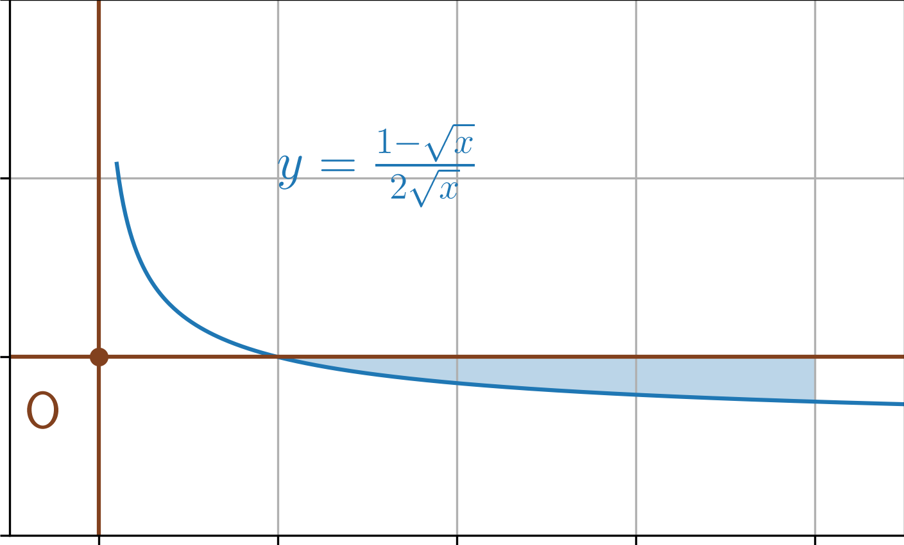 |
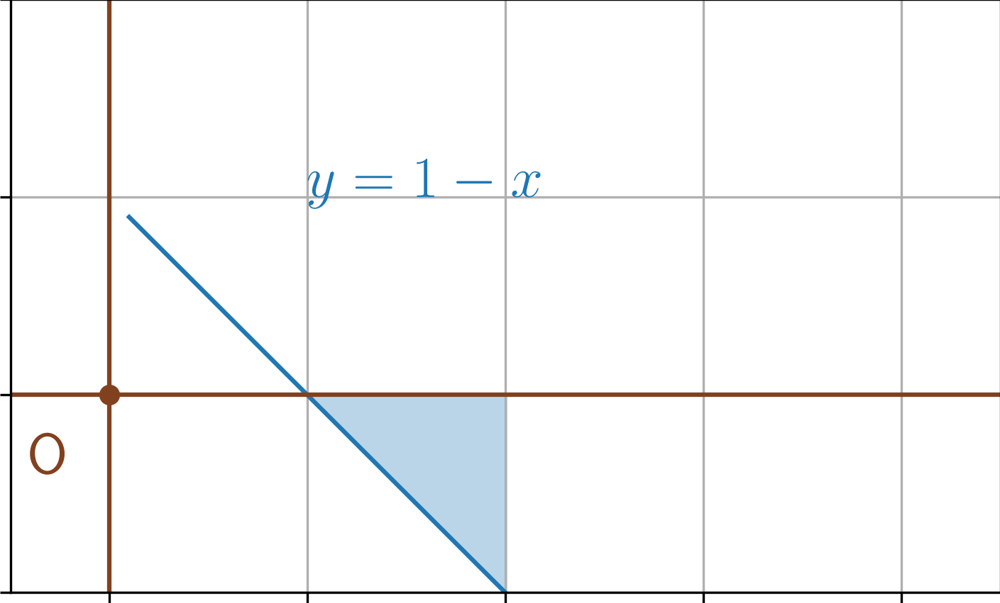 |
Exercice — Calculer \(B = \int_0^{\tfrac{\pi}{2}} \frac{\cos t}{4-\sin^2 t}dt\).
Corrigé — Intuition : En règle générale, on veut utiliser le changement de variables pour se débarrasser de fonctions désagréables dans une intégrale. Ici, on repère de désagréable \(\cos t\) et \(\sin t\).
On propose le changement de variable \(u = \sin t\). Alors, par un procédé pas très mathématique, on écrit \(du = \cos t dt\) (il faut dériver le terme de droite). On peut alors opérer le changement de variables avec tous les ingrédients nécessaires.
On remplace \(\cos t dt\) par \(du\)
On remplace \(\sin^2t\) par \(u^2\).
Pour les bornes, quand \(t = 0\), \(u = \sin t = 0\) et quand \(t = \tfrac{\pi}{2}\), \(u = \sin t = 1\).
Donc finalement,
\[B = \int_0^{\tfrac{\pi}{2}} \frac{\cos t}{4-\sin^2 t}dt = \int_0^{1} \frac{du}{4-u^2}.\]
De plus, par une identité remarquable, \(4-u^2 = (2-u)(2+u)\) et on cherche \(\alpha,\beta \in \mathbb{R}\) tels que \(\frac{1}{4-u^2} = \frac{\alpha}{2-u}+\frac{\beta}{2+u}\). On trouve \(\alpha = \frac{1}{4}\) et \(\beta = \frac{1}{4}\).
On a donc \[B = \frac{1}{4}\int_0^{1} \frac{du}{2-u}+\frac{1}{4}\int_0^{1} \frac{du}{2+u} = \frac{1}{4}\left[-\ln(2-u)\right]_0^1 + \frac{1}{4}\left[\ln(2+u)\right]_0^1 = \frac{1}{4}\ln(3).\]
(Lien avec la formule du théorème) Avec \(\varphi : t \mapsto \sin(t)\), \(f : x \mapsto \frac{1}{4-x^2}\) et \(\alpha = 0, \beta = \frac{\pi}{2}\) on a bien écrit \[\int_\alpha^\beta (f\circ \varphi)(t) \varphi'(t)dt = \int_{\varphi(\alpha)}^{\varphi(\beta)}f(x)dx.\]
On a montré l’égalité entre les deux aires algébriques suivantes.
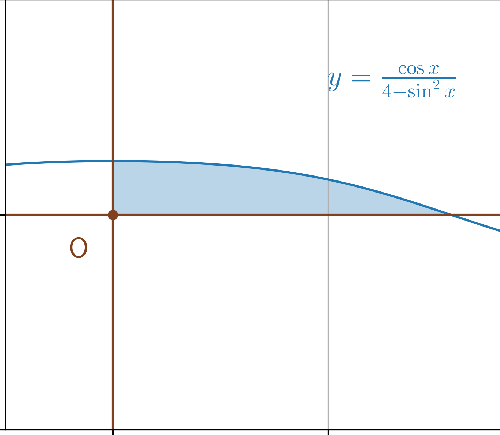 |
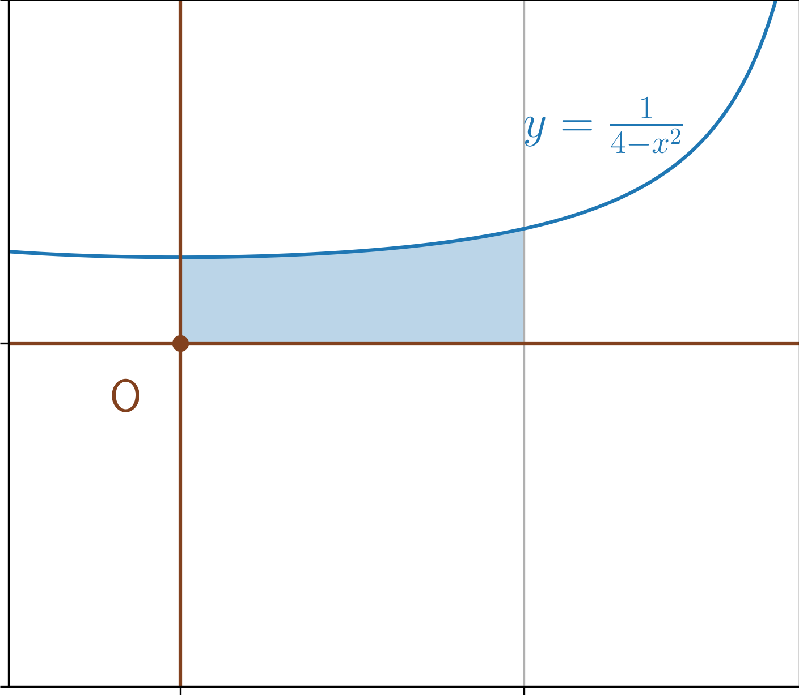 |
Exercice — Calculer \(C = \int_0^{2} \frac{1}{2+\sqrt{t+1}}dt\).
Corrigé — Intuition : En règle générale, on veut utiliser le changement de variables pour se débarrasser de fonctions désagréables dans une intégrale. Ici, on repère le désagréable \(\sqrt{t+1}\).
On propose le changement de variable \(u = \sqrt{t+1}\). Alors, par un procédé pas très mathématique, on écrit \(du = \frac{1}{2\sqrt{t+1}} dt\) (il faut dériver le terme de droite). On peut alors opérer le changement de variables avec tous les ingrédients nécessaires.
On remplace \(\frac{1}{2\sqrt{t+1}}dt\) par \(du\)
Problème ! Ce terme n’apparaît pas dans notre intégrale. On a besoin d’un peu plus de travail.
\(du = \frac{1}{2\sqrt{t+1}} dt \iff dt = 2\sqrt{t+1}du = 2udu\). On reprend donc,
On remplace \(dt\) par \(2udu\),
On remplace \(\sqrt{t+1}\) par \(u\).
Pour les bornes, quand \(t = 0\), \(u = \sqrt{t+1} = 1\) et quand \(t = 2\), \(u = \sqrt{t+1} = \sqrt{3}\).
Donc finalement,
\[C = \int_0^{2} \frac{1}{2+\sqrt{t+1}}dt= \int_1^{\sqrt{3}}\frac{2udu}{2+u}.\]
Or, \(\frac{u}{2+u} = \frac{2+u-2}{2+u} = 1-\frac{2}{2+u}\)
On a donc \[C = 2\int_1^{\sqrt{3}}1du - 4\int_1^{\sqrt{3}}\frac{du}{2+u} = 2\sqrt{3}-4 \left[\ln(2+u)\right]_1^{\sqrt{3}} = 2\sqrt{3}-2 +4\ln(3) -4\ln(2+\sqrt{3}).\]
(Lien avec la formule du théorème) En remarquant \(\frac{1}{2+\sqrt{t+1}} = \frac{2\sqrt{t+1}}{2+\sqrt{t+1}}\frac{1}{2\sqrt{t+1}}\), avec \(\varphi : t \mapsto \sqrt{t+1}\), \(f : x \mapsto \frac{2x}{2+x}\) et \(\alpha = 0, \beta = 2\) on a bien écrit \[\int_\alpha^\beta (f\circ \varphi)(t) \varphi'(t)dt = \int_{\varphi(\alpha)}^{\varphi(\beta)}f(x)dx.\]
On a montré l’égalité entre les deux aires algébriques suivantes.
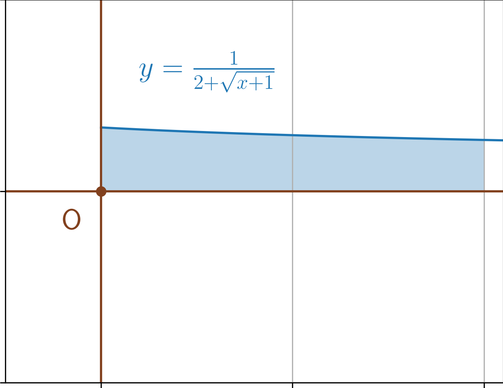 |
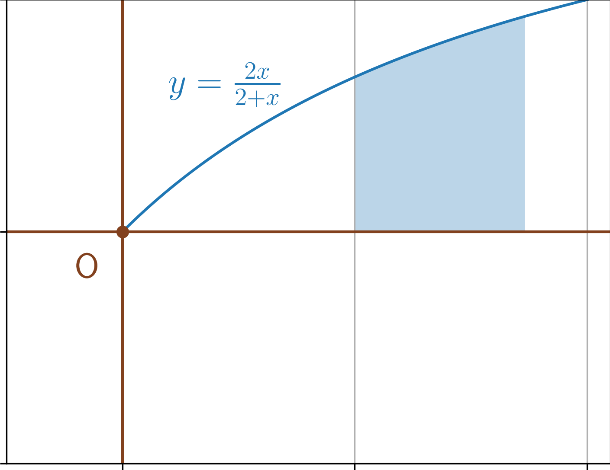 |
Exercice — Calculer la primitive de \(t > 0\mapsto \frac{\ln t}{t+t(\ln t)^2}\) qui s’annule en \(1\).
Corrigé — La primitive de \(f\) qui s’annule en \(1\) s’écrit, pour \(x > 0\), \[F(x) = \int_1^x \frac{\ln t}{t+t(\ln t)^2} dt.\]
Intuition : En règle générale, on veut utiliser le changement de variables pour se débarrasser de fonctions désagréables dans une intégrale. Ici, on repère le désagréable \(\ln t\).
On propose le changement de variable \(u = \ln t\). Alors, \(du = \frac{dt}{t}\) On peut alors opérer le changement de variables avec tous les ingrédients nécessaires.
On remplace \(\frac{dt}{t}\) par \(du\)
On remplace \(\ln t\) par \(u\).
Pour les bornes, quand \(t = 1\), \(u = \ln t = 0\) et quand \(t = x\), \(u = \ln t = \ln x\).
Donc finalement,
\[F(x) = \int_0^{\ln x} \frac{u}{1+u^2} du = [\frac{1}{2}\ln(1+u^2)]_0^{\ln x} = \frac{1}{2}\ln(1+\ln^2(x)).\]
(Asymptote (ou branches infinie)) Soit \(f : I \to \mathbb{R}\) une fonction, \((O,\vec{i},\vec{j})\) un repère orthonormé du plan et \((C)=\{ M_x = (x,f(x)) \mid x \in I \}\) la courbe représentative de \(f\).
Si \(I = [a,b[\) avec \(a,b \in \mathbb{R}, a<b\) et \(f(x) \underset{x \longrightarrow b}{\longrightarrow} + \infty\) ou \(f(x) \underset{x \longrightarrow b}{\longrightarrow} - \infty\), la droite d’équation \(x = b\) est dite asymptote verticale à \((C)\) quand \(x\) tend vers \(b\).
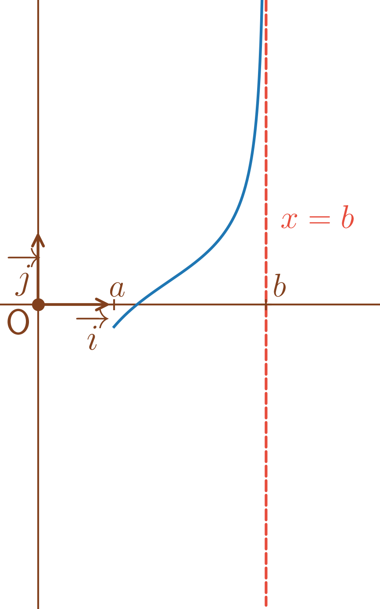 |
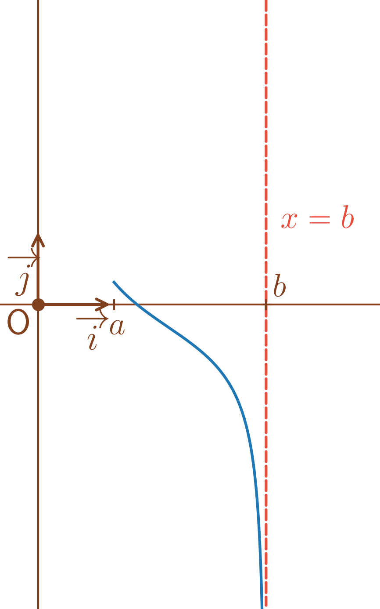 |
Si \(I = [a,+\infty[\) avec \(a \in \mathbb{R}\) et il existe \(\ell \in \mathbb{R}\) tel que \(f(x) \underset{x \longrightarrow +\infty}{\longrightarrow} \ell\), la droite d’équation \(y = \ell\) est dite asymptote horizontale à \((C)\) quand \(x\) tend vers \(+\infty\).
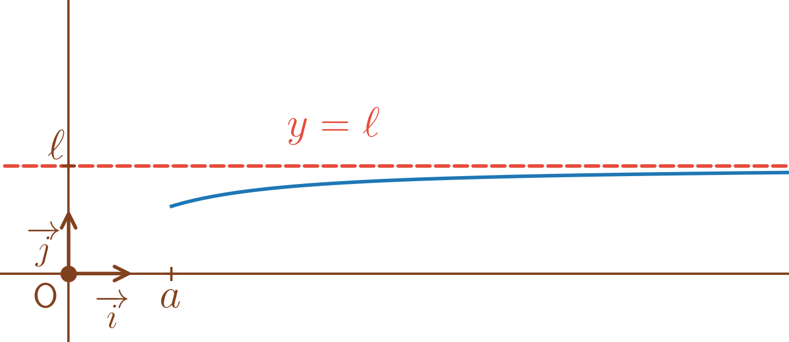
Si \(I = [a,+\infty[\) avec \(a \in \mathbb{R}\) et \(f(x) \underset{x \longrightarrow +\infty}{\longrightarrow} +\infty\) ou \(f(x) \underset{x \longrightarrow +\infty}{\longrightarrow} -\infty\), la droite d’équation \(y = \alpha x + \beta\) avec \(\alpha,\beta \in \mathbb{R}\) est dite asymptote oblique à \((C)\) quand \(x\) tend vers \(+\infty\) si \(f(x) - \alpha x -\beta \underset{x \longrightarrow +\infty}{\longrightarrow} 0\).
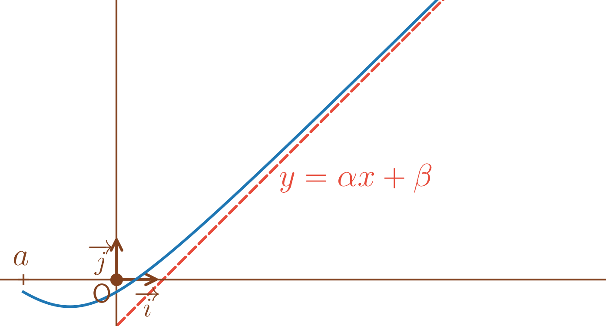 |
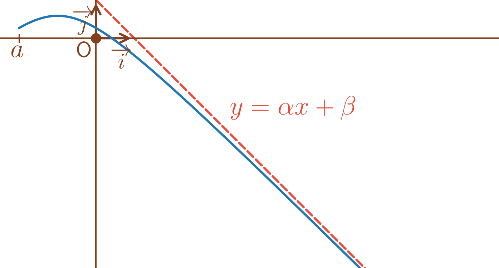 |
On peut étendre les 2. et 3. en des asymptotes en \(-\infty\), ainsi
Si \(I = ]-\infty,b]\) avec \(b \in \mathbb{R}\) et il existe \(\ell \in \mathbb{R}\) tel que \(f(x) \underset{x \longrightarrow -\infty}{\longrightarrow} \ell\), la droite d’équation \(y = \ell\) est dite asymptote horizontale à \((C)\) quand \(x\) tend vers \(-\infty\).
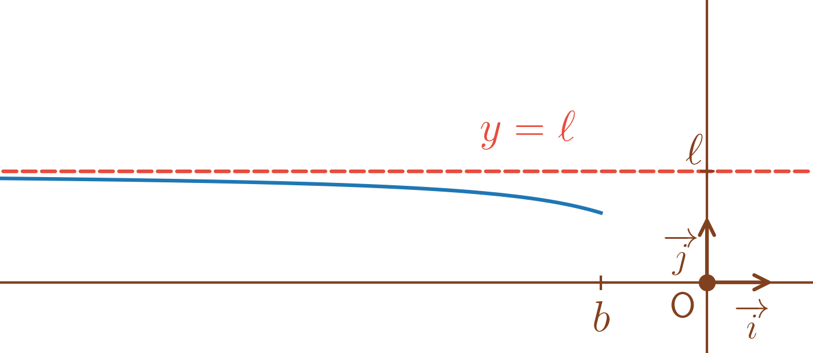
Si \(I = ]-\infty,b]\) avec \(b \in \mathbb{R}\) et \(f(x) \underset{x \longrightarrow -\infty}{\longrightarrow} +\infty\) ou \(f(x) \underset{x \longrightarrow -\infty}{\longrightarrow} -\infty\), la droite d’équation \(y = \alpha x + \beta\) avec \(\alpha,\beta \in \mathbb{R}\) est dite asymptote oblique à \((C)\) quand \(x\) tend vers \(-\infty\) si \(f(x) - \alpha x -\beta \underset{x \longrightarrow -\infty}{\longrightarrow} 0\).
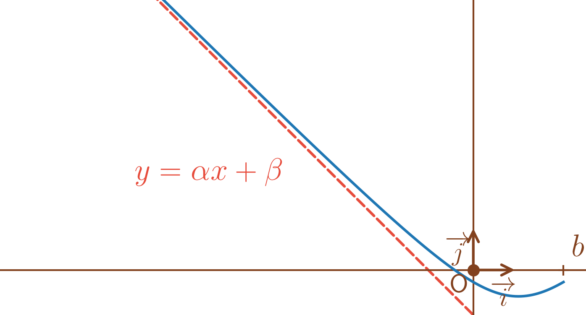 |
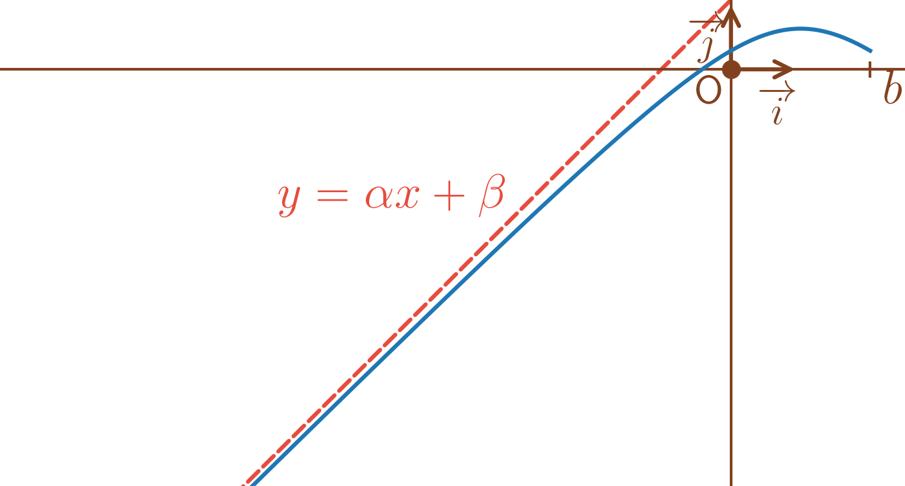 |
(Conditions nécessaires et suffisantes d’existence d’une asymptote oblique) Soit \(f : [a,+\infty[ \to \mathbb{R}\) avec \(a \in \mathbb{R}\) et \(\alpha, \beta \in \mathbb{R}\), sa courbe admet pour asymptote oblique la droite d’équation \(y= \alpha x + \beta\) quand \(x\) tend vers \(+\infty\) si et seulement si \(\frac{f(x)}{x} \underset{x \longrightarrow +\infty}{\longrightarrow} \alpha\) et \(f(x)-\alpha x \underset{x \longrightarrow +\infty}{\longrightarrow} \beta\)
Si \(f(x) - \alpha x -\beta \underset{x \longrightarrow +\infty}{\longrightarrow} 0\) alors \(\frac{f(x)}{x} = \frac{f(x)-\alpha x - \beta}{x} +\alpha +\frac{\beta}{x} \underset{x \longrightarrow +\infty}{\longrightarrow}0+ \alpha+0=\alpha\). De plus, \(f(x)-\alpha x =(f(x) - \alpha x -\beta) + \beta \underset{x \longrightarrow +\infty}{\longrightarrow} 0+\beta=\beta\).
Si \(f(x)-\alpha x \underset{x \longrightarrow +\infty}{\longrightarrow} \beta\), alors \(f(x) - \alpha x -\beta \underset{x \longrightarrow +\infty}{\longrightarrow} 0\).
Cette proposition est très utile en pratique, comme le démontre l’exemple ci-dessous.
Considérons \(f : x \in \mathbb{R}\mapsto \sqrt{x^2+2x+3}\).
Remarquons d’abord que \(f\) est bien définie sur \(\mathbb{R}\) car \(x^2+2x+3 = x^2+2x+1 +2 = (x+1)^2+2 \geq 0\).
D’autre part, pour \(x \geq 0\),
\[\frac{f(x)}{x} = \frac{\sqrt{x^2+2x+3}}{x} \underbrace{=}_{\text{car } x \geq 0} \frac{\sqrt{x^2+2x+3}}{\sqrt{x^2}} = \sqrt{1+\frac{2}{x}+\frac{3}{x^2}}\underset{x \longrightarrow +\infty}{\longrightarrow} 1.\]
De plus,
\[\begin{aligned} f(x)-1 & = \sqrt{x^2+2x+3}-x \\ & = \frac{(\sqrt{x^2+2x+3}-x)(\sqrt{x^2+2x+3}+x)}{\sqrt{x^2+2x+3}+x} \text{\small en multipliant par la quantité conjuguée} \\ & = \frac{x^2+2x+3-x^2}{\sqrt{x^2+2x+3}+x} \\ & = \frac{2x+3}{\sqrt{x^2+2x+3}+x} \\ & = \frac{x\left(2+\frac{3}{x}\right)}{x(\sqrt{1+\frac{2}{x}+\frac{3}{x^2}}+1)} \\ & = \frac{2+\frac{3}{x}}{\sqrt{1+\frac{2}{x}+\frac{3}{x^2}}+1} \\ & \underset{x \longrightarrow +\infty}{\longrightarrow} \frac{2}{2} = 1. \end{aligned}\]
Donc la courbe de \(f\) admet la droite d’équation \(y=x+1\) comme asymptote oblique quand \(x\) tend vers \(+\infty\).
\(\sin\) et \(\cos\) sont dérivables sur \(\mathbb{R}\) avec \(\cos' = -\sin\), \(\sin' = \cos\). Ce sont des fonctions \(2\pi\)-périodiques. \(\sin\) est impaire tandis que \(\cos\) est paire.
Allure des courbes.
| \(\sin\) | \(\cos\) |
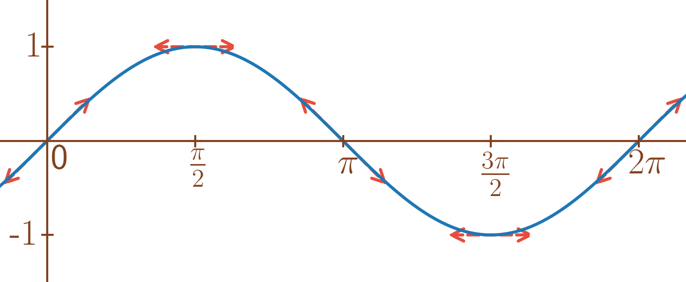 |
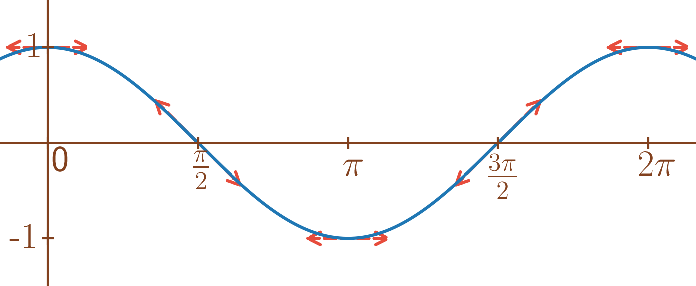 |
En notant \(D_{\tan} = \{x \in \mathbb{R}/ \cos x \neq 0\}= \mathbb{R}\setminus \{\frac{\pi}{2} + 2k\pi / k \in \mathbb{Z}\}\), on définit pour \(x \in D_{\tan}\), \[\tan x = \frac{\sin x}{\cos x}.\]
\(\tan\left(\frac{\pi}{4}\right) = 1, \tan\left(\frac{\pi}{3}\right) = \sqrt{3}, \tan\left(\frac{\pi}{6}\right) = \frac{1}{\sqrt{3}}\).
\(\tan\) est impaire.
\(\tan\) est \(\pi\)-périodique.
\(\tan\) est dérivable sur \(D_{\tan}\), avec \(\tan' = 1+\tan^2 = \frac{1}{\cos^2}\).
\[\begin{aligned} \tan\left(\frac{\pi}{4}\right) & = \frac{\cos\left(\frac{\pi}{4}\right)}{\sin\left(\frac{\pi}{4}\right)} = \frac{\frac{\sqrt{2}}{2}}{\frac{\sqrt{2}}{2}} = 1, \\ \tan\left(\frac{\pi}{3}\right) & = \frac{\cos\left(\frac{\pi}{3}\right)}{\sin\left(\frac{\pi}{3}\right)} = \frac{\frac{\sqrt{3}}{2}}{\frac{1}{2}} = \sqrt{3}, \\ \tan\left(\frac{\pi}{6}\right) & = \frac{\cos\left(\frac{\pi}{6}\right)}{\sin\left(\frac{\pi}{6}\right)} = \frac{\frac{1}{2}}{\frac{\sqrt{3}}{2}} = \frac{1}{\sqrt{3}}. \end{aligned}\]
Pour \(x \in D_{\tan}\), \(\tan(-x) = \frac{\sin(-x)}{\cos(-x)} = \frac{-\sin x}{\cos x} =-\tan x\)
Pour \(x \in D_{\tan}\), \(\tan(x+\pi) = \frac{\sin(x+\pi)}{\cos(x+\pi)} = \frac{-\sin x}{-\cos x} =\tan x\)
\[\begin{aligned} \forall x \in D_{\tan}, \tan'(x) &= \frac{\sin' x \cos x - \sin x \cos' x}{\cos^2 x} \\ &= \frac{\cos^2 x + \sin^2 x }{\cos^2 x} =\left\{\begin{array}{ll} & \frac{1}{\cos^2 x} \\ & \frac{\cos^2 x\left(1 + \frac{\sin^2 x}{\cos^2 x}\right) }{\cos^2 x} = 1+\tan^2 x \end{array}\right. \end{aligned}\].
Allure de la courbe.
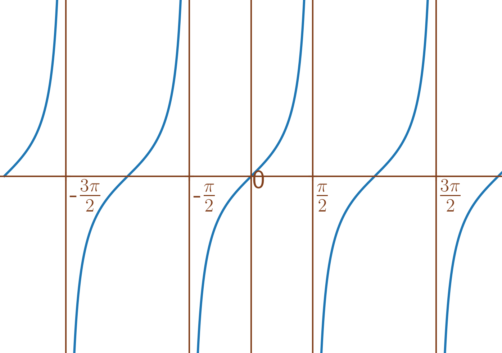
Soient \(a,b \in D_{\tan}\), tels que \(a+b \in D_{\tan}\) \[\tan(a+b) = \frac{\tan a+\tan b}{1-\tan a \tan b}\]
\[\tan(a+b) = \frac{\sin(a+b)}{\cos(a+b)} = \frac{\sin a \cos b + \cos a \sin b}{\cos a \cos b - \sin a \sin b} = \frac{\cos a \cos b}{\cos a \cos b}\frac{\frac{\sin a}{\cos a} + \frac{\sin b}{\cos b}}{1 - \frac{\sin a}{\cos a} \frac{\sin b}{\cos b}} = \frac{\tan a+\tan b}{1-(\tan a \tan b)}\]
Soient \(a,b \in D_{\tan}\), tels que \(a-b \in D_{\tan}\) \[\tan(a-b) = \frac{\tan a-\tan b}{1+\tan a \tan b}\]
Soit \(a \in D_{\tan}\), tel que \(2a \in D_{\tan}\) \[\tan(2a) = \frac{2\tan a}{1+\tan^2 a}\]
Considérons la fonction carrée \(f: x \in \mathbb{R}\mapsto x^2 \in \mathbb{R}^+\). Cette fonction n’est pas une bijection : on a par exemple \(f(1)=f(-1) = 1\). En revanche, la fonction \(g : x \in \mathbb{R}^+ \mapsto x^2\in \mathbb{R}^+\) est bien une bijection car elle est strictement croissante. On peut alors considérer sa réciproque, notée \(\sqrt{}\), que l’on appelle ici \(h : x \in \mathbb{R}^+ \mapsto \sqrt{x} \in \mathbb{R}^+\). En traçant le graphe de \(g\) et \(h\) ci-contre, on retrouve bien la propriété de la courbe d’une fonction réciproque.
En revanche, on n’a pas \(h = f^{-1}\), comme \(f\) n’est pas bijective ! En particulier, pour \(x \in \mathbb{R}\), on a en général \(h(f(x)) = \sqrt{x^2} = |x| \neq x\) bien que l’on ait \(f(h(x)) = (\sqrt{x})^2 = x\) pour \(x \in \mathbb{R}^+\). Des phénomènes similaires vont se produire pour les fonctions trigonométriques réciproques.
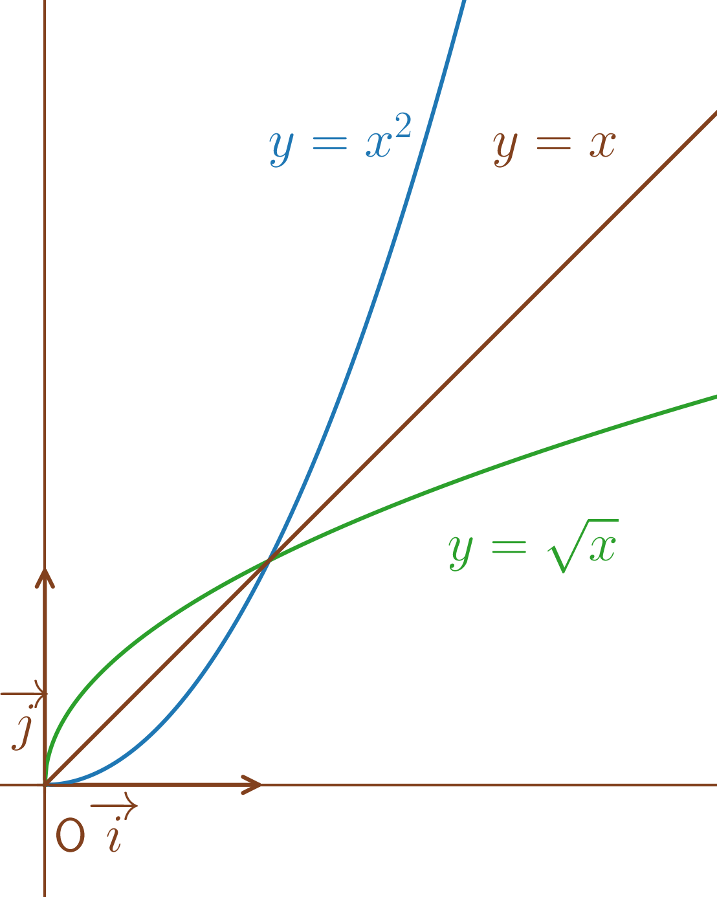
La fonction \(\sin\) n’est pas bijective, on a par exemple \(\sin(0) = \sin(\pi) = 0\). En revanche, la fonction \(g : x \in \left[-\frac{\pi}{2},\frac{\pi}{2}\right] \mapsto \sin(x) \in [-1,1]\) est bijective car elle est strictement croissante, comme illustré sur le graphe ci-contre.
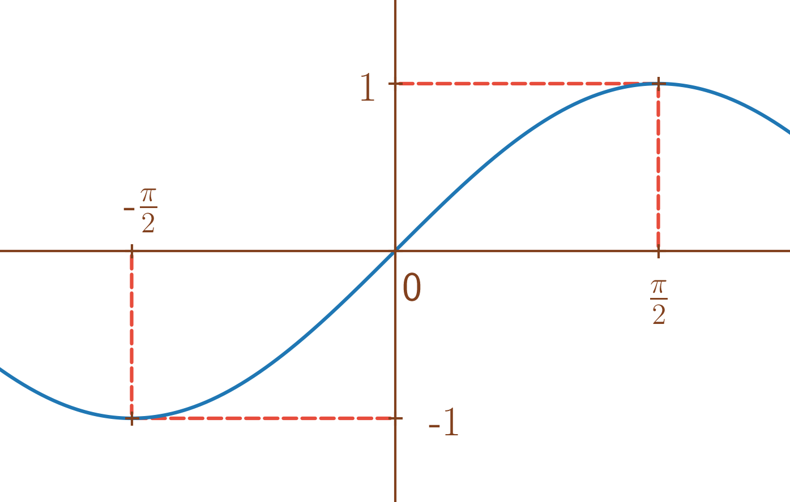
(\(\mathop{\mathrm{Arcsin}}\)) \(\mathop{\mathrm{Arcsin}}: [-1,1] \to \left[-\frac{\pi}{2},\frac{\pi}{2}\right]\) est définie comme la bijection réciproque de la bijection \(x \in \left[-\frac{\pi}{2},\frac{\pi}{2}\right] \mapsto \sin(x) \in [-1,1]\).
⚠️ \(\sin^{-1}\) n’a aucun sens (Encore une fois, \(\sin\) n’est pas une bijection !).
Soit \(y \in [-1,1]\), \(\mathop{\mathrm{Arcsin}}(y)\) est l’unique \(x \in \left[-\frac{\pi}{2},\frac{\pi}{2}\right]\) tel que \(\sin x = y\).
En particulier, pour \(y \in [-1,1], \sin(\mathop{\mathrm{Arcsin}}(y)) = \sin(x) = y\).
Aussi, pour \(x \in \left[-\frac{\pi}{2},\frac{\pi}{2}\right]\), \(\mathop{\mathrm{Arcsin}}(\sin(x)) = x\).
En revanche, en général, pour \(x \in \mathbb{R}\) tel que \(x \notin \left[-\frac{\pi}{2},\frac{\pi}{2}\right]\), \(\mathop{\mathrm{Arcsin}}(\sin(x)) \neq x\) car \(\mathop{\mathrm{Arcsin}}(\sin(x)) \in \left[-\frac{\pi}{2},\frac{\pi}{2}\right]\).
(Propriétés de la fonction \(\mathop{\mathrm{Arcsin}}\))
\(\mathop{\mathrm{Arcsin}}(0) = 0, \mathop{\mathrm{Arcsin}}(1) = \frac{\pi}{2}, \mathop{\mathrm{Arcsin}}(-1) = -\frac{\pi}{2},\)
\(\mathop{\mathrm{Arcsin}}\) est impaire,
pour \(y \in [-1,1]\), \(\cos(\mathop{\mathrm{Arcsin}}(y)) = \sqrt{1-y^2}\),
\(\mathop{\mathrm{Arcsin}}\) est dérivable sur \(\left]-1,1\right[\) tel que pour \(y \in \left]-1,1\right[\), \[\mathop{\mathrm{Arcsin}}'(y) = \frac{1}{\sqrt{1-y^2}}.\]
\(\sin(0) = 0\) avec \(0 \in \left[-\frac{\pi}{2},\frac{\pi}{2}\right]\), \(\sin\left(\frac{\pi}{2}\right) = 1\) avec \(\frac{\pi}{2} \in \left[-\frac{\pi}{2},\frac{\pi}{2}\right]\) et \(\sin\left(-\frac{\pi}{2}\right) = -1\) avec \(-\frac{\pi}{2} \in \left[-\frac{\pi}{2},\frac{\pi}{2}\right]\).
Pour \(y \in [-1,1]\), notons \(x = \mathop{\mathrm{Arcsin}}(y) \in \left[-\frac{\pi}{2},\frac{\pi}{2}\right]\).
On a \(\sin(x) = y\) et de plus, \(\sin(-x) = -\sin x = -y\) avec \(-x \in \left[-\frac{\pi}{2},\frac{\pi}{2}\right]\).
Donc \(-x\) est l’unique élément de \(\left[-\frac{\pi}{2},\frac{\pi}{2}\right]\) tel que \(\sin(-x) = y\) donc \(\mathop{\mathrm{Arcsin}}(-y) = -x = - \mathop{\mathrm{Arcsin}}(y)\).
Pour \(y \in [-1,1]\), \(\cos^2(\mathop{\mathrm{Arcsin}}(y)) = 1-\sin^2(\mathop{\mathrm{Arcsin}}(y)) = 1-y^2\) donc \(\sqrt{\cos^2(\mathop{\mathrm{Arcsin}}(y))} = \sqrt{1-y^2}\).
Or, \(\cos\) est positive sur \(\left[-\frac{\pi}{2},\frac{\pi}{2}\right]\) donc \(\cos(\mathop{\mathrm{Arcsin}}(y)) = \sqrt{1-y^2}\).
Par le corollaire [cor:derivee_reciproque], \(\mathop{\mathrm{Arcsin}}\) est dérivable en les points \(y \in [-1,1]\) tels que \(y=\sin(x)\), \(x \in \left[-\frac{\pi}{2},\frac{\pi}{2}\right]\) et \(\sin'(x) = \cos(x)\neq 0\) donc pour \(x \in \left]-\frac{\pi}{2},\frac{\pi}{2}\right[\) et \(y = \sin(x) \in ]-1,1[\).
De plus, pour \(y \in \left]-1,1\right[\), \(\mathop{\mathrm{Arcsin}}'(y) =\frac{1}{\sin'(x)} = \frac{1}{\cos(\mathop{\mathrm{Arcsin}}(y))} = \frac{1}{\sqrt{1-y^2}}\).
Allure de la courbe.
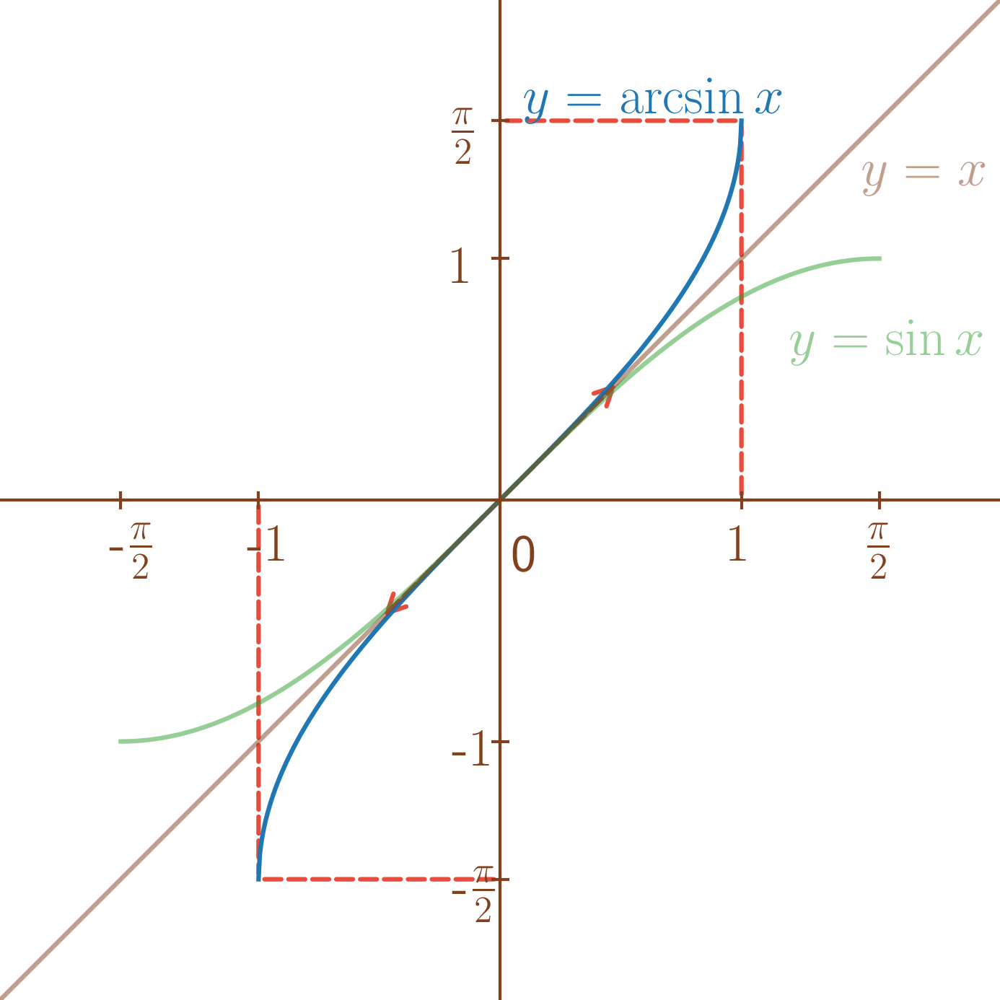
Etude de \(\boldsymbol{\mathop{\mathrm{Arcsin}}(sin).}\ \)
Pour \(x \in \mathbb{R}\), \(\sin x \in [-1,1]\) donc on peut considérer \(f : x \in \mathbb{R}\mapsto \mathop{\mathrm{Arcsin}}(\sin x)\).
Comme discuté précédemment, en général, \(\mathop{\mathrm{Arcsin}}(\sin x) \neq x\).
En revanche, \(f\) est \(2\pi\)-périodique. En effet, pour \(x \in \mathbb{R}\), \(f(x+2\pi) = \mathop{\mathrm{Arcsin}}(\sin (x+2\pi)) = \mathop{\mathrm{Arcsin}}(\sin(x)) = f(x)\).
Il suffit donc de la déterminer sur un intervalle de taille \(2\pi\) comme \(\left[-\frac{\pi}{2},\frac{3\pi}{2}\right]\).
Pour \(x \in \left[-\frac{\pi}{2},\frac{\pi}{2}\right]\), \(f(x) = \mathop{\mathrm{Arcsin}}(\sin x) = x\).
Pour \(x \in \left[\frac{\pi}{2},\frac{3\pi}{2}\right]\), \(\mathop{\mathrm{Arcsin}}(\sin x)\) est l’unique élément \(t\) de \(\left[-\frac{\pi}{2},\frac{\pi}{2}\right]\) tel que \(\sin(t) = \sin(x)\).
Or, \(\sin(x) = \sin(\pi -x)\) et pour \(x \in \left[\frac{\pi}{2},\frac{3\pi}{2}\right]\), \(t = \pi-x \in \left[-\frac{\pi}{2},\frac{\pi}{2}\right]\).
Donc \(f(x) = \mathop{\mathrm{Arcsin}}(\sin x) = \pi -x\).
On peut donc tracer le graphe de \(f\) par \(2\pi\)-périodicité.
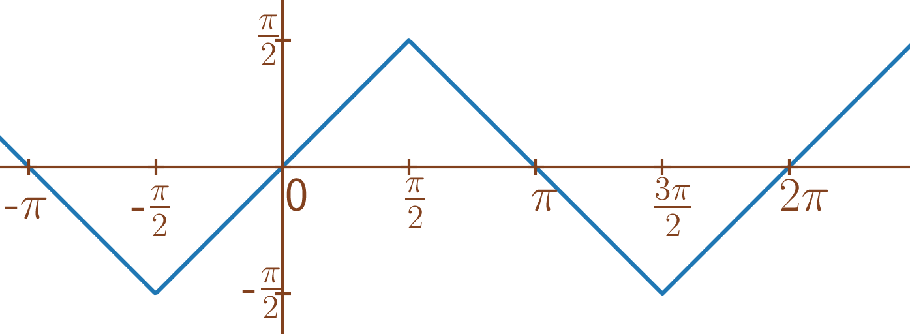
La fonction \(\cos\) n’est pas bijective, on a par exemple \(\cos(0) = \cos(\pi) = 1\). En revanche, la fonction \(g : x \in \left[0,\pi\right] \mapsto \cos(x) \in [-1,1]\) est bijective car elle est strictement décroissante, comme illustré sur le graphe ci-contre.
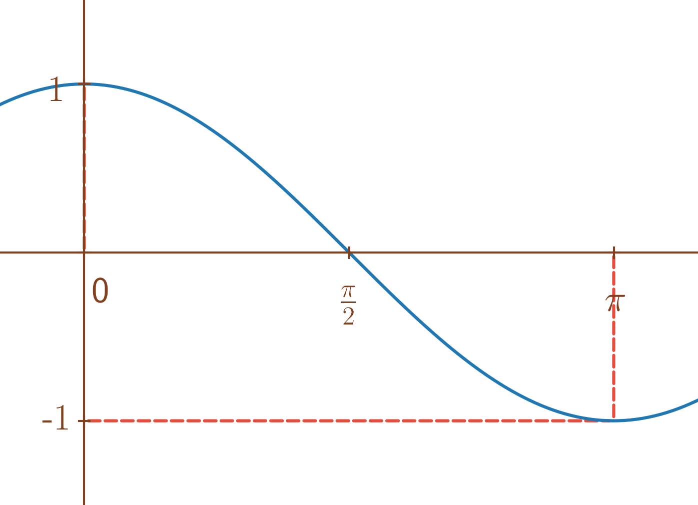
(\(\mathop{\mathrm{Arccos}}\)) \(\mathop{\mathrm{Arccos}}: [-1,1] \to \left[0,\pi\right]\) est définie comme la bijection réciproque de la bijection \(x \in \left[0,\pi\right] \mapsto \cos(x) \in [-1,1]\).
⚠️ \(\cos^{-1}\) n’a aucun sens (Encore une fois, \(\cos\) n’est pas une bijection !).
Soit \(y \in [-1,1]\), \(\mathop{\mathrm{Arccos}}(y)\) est l’unique \(x \in \left[0,\pi\right]\) tel que \(\cos x = y\).
En particulier, pour \(y \in [-1,1], \cos(\mathop{\mathrm{Arccos}}(y)) = \cos(x) = y\).
Aussi, pour \(x \in \left[0,\pi\right]\), \(\mathop{\mathrm{Arccos}}(\cos(x)) = x\).
En revanche, en général, pour \(x \in \mathbb{R}\) tel que \(x \notin \left[0,\pi\right]\), \(\mathop{\mathrm{Arccos}}(\cos(x)) \neq x\) car \(\mathop{\mathrm{Arccos}}(\cos(x)) \in \left[0,\pi\right]\).
(Lien entre \(\mathop{\mathrm{Arccos}}\) et \(\mathop{\mathrm{Arcsin}}\)) Soit \(y \in [-1,1]\), \(\mathop{\mathrm{Arccos}}(y) + \mathop{\mathrm{Arcsin}}(y) = \frac{\pi}{2}\).
Soit \(y \in [-1,1]\), \(\mathop{\mathrm{Arcsin}}(y)\) est l’unique \(t \in \left[-\frac{\pi}{2},\frac{\pi}{2}\right]\) tel que \(\sin t = y\).
Or, pour \(t \in \mathbb{R}\), \(\sin(t) = \cos\left(\frac{\pi}{2}-t\right)\).
et pour \(t \in \left[-\frac{\pi}{2},\frac{\pi}{2}\right]\), \(\frac{\pi}{2}-t \in [0,\pi]\) donc \(\mathop{\mathrm{Arccos}}(y) = \mathop{\mathrm{Arccos}}(\sin t) =\mathop{\mathrm{Arccos}}\left( \cos\left(\frac{\pi}{2}-t\right)\right) = \frac{\pi}{2}-t = \frac{\pi}{2}-\mathop{\mathrm{Arcsin}}(y)\).
On en déduit \(\mathop{\mathrm{Arccos}}(y) = \frac{\pi}{2}-\mathop{\mathrm{Arcsin}}(y) \iff \mathop{\mathrm{Arccos}}(y) + \mathop{\mathrm{Arcsin}}(y) = \frac{\pi}{2}\).
(Propriétés de \(\mathop{\mathrm{Arccos}}\))
\(\mathop{\mathrm{Arccos}}(0) = \frac{\pi}{2}, \mathop{\mathrm{Arccos}}(1) = 0, \mathop{\mathrm{Arccos}}(-1) = \pi\),
Pour \(y \in [-1,1], \mathop{\mathrm{Arccos}}(y) = \pi - \mathop{\mathrm{Arccos}}(y)\),
\(\mathop{\mathrm{Arccos}}\) est dérivable sur \(]–1,1[\) avec pour \(y \in ]-1,1[\), \[\mathop{\mathrm{Arccos}}'(y) = -\frac{1}{\sqrt{1-y^2}}\]
\(\cos\left(\frac{\pi}{2}\right) = 0\) avec \(\frac{\pi}{2} \in [0,\pi]\), \(\cos\left(0\right) = 1\) avec \(1 \in [0,\pi]\) et \(\cos\left(\pi\right) = -1\) avec \(\pi \in [0,\pi]\).
Pour \(y \in [-1,1], \mathop{\mathrm{Arccos}}(y)\) est l’unique \(t \in [0,\pi]\) tel que \(\cos t = y\).
Or, \(\pi - t \in [0,\pi]\) et \(\cos(\pi-t) = -\cos(t) = -y\)
donc \(\mathop{\mathrm{Arccos}}(-y) = \pi-t = \pi - \mathop{\mathrm{Arccos}}(y)\).
Pour \(y \in [-1,1]\), \(\mathop{\mathrm{Arccos}}(y) = \frac{\pi}{2} - \mathop{\mathrm{Arcsin}}(y)\) donc \(\mathop{\mathrm{Arccos}}\) est dérivable sur \(]-1,1[\) et pour \(y \in ]-1,1[\), \[\mathop{\mathrm{Arccos}}'(y) = -\mathop{\mathrm{Arcsin}}'(y) =-\frac{1}{\sqrt{1-y^2}}.\]
Allure de la courbe.
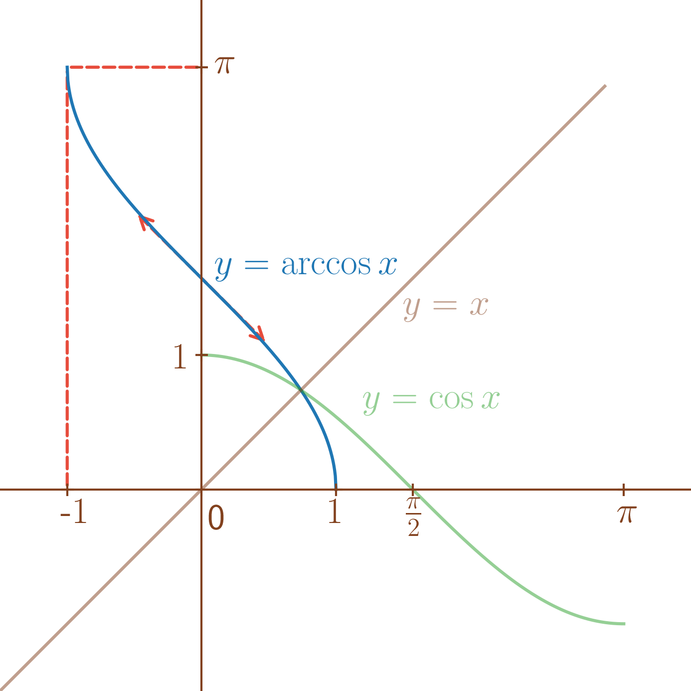
Etude de \(\boldsymbol{\mathop{\mathrm{Arccos}}(cos).}\ \)
Pour \(x \in \mathbb{R}\), \(\cos x \in [-1,1]\) donc on peut considérer \(f : x \in \mathbb{R}\mapsto \mathop{\mathrm{Arccos}}(\cos x)\).
Comme discuté précédemment, en général, \(\mathop{\mathrm{Arccos}}(\cos x) \neq x\).
En revanche, \(f\) est \(2\pi\)-périodique, et il suffit donc de la déterminer sur \(\left[0,2\pi\right]\).
Pour \(x \in \left[0,\pi\right]\), \(f(x) = \mathop{\mathrm{Arccos}}(\cos x) = x\).
Pour \(x \in \left[\pi,2\pi\right]\), \(\mathop{\mathrm{Arccos}}(\cos x)\) est l’unique élément \(t\) de \(\left[0,\pi\right]\) tel que \(\cos(t) = \cos(x)\).
Or, \(\cos(x) = \cos(2\pi -x)\) et pour \(x \in \left[\pi,2\pi\right]\), \(t = 2\pi-x \in \left[0,\pi\right]\).
Donc \(f(x) = \mathop{\mathrm{Arccos}}(\cos x) = 2\pi -x\).
On peut donc tracer le graphe de \(f\) par \(2\pi\)-périodicité.
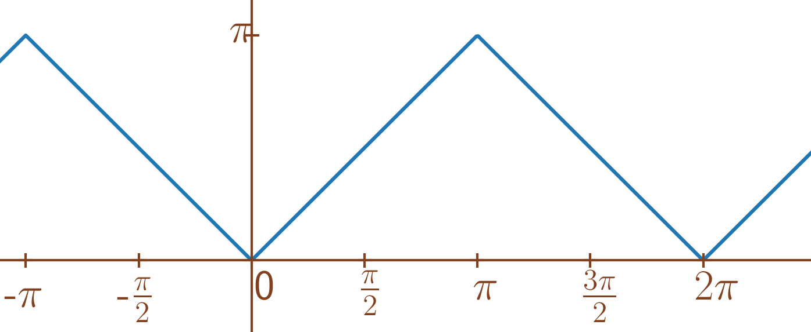
La fonction \(\tan\) n’est pas bijective, on a par exemple \(\tan(0) = \tan(\pi) = 0\). En revanche, la fonction \(g : x \in \left]-\frac{\pi}{2},\frac{\pi}{2}\right[ \mapsto \tan(x) \in \mathbb{R}\) est bijective car elle est strictement croissante, comme illustré sur le graphe ci-contre.
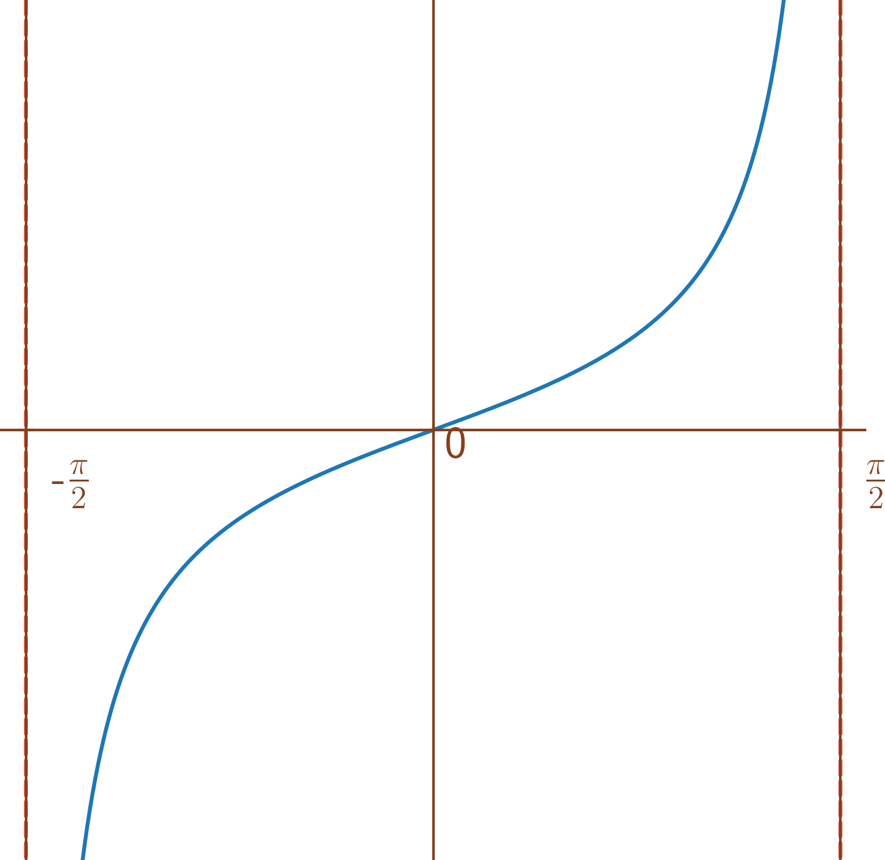
(\(\mathop{\mathrm{Arctan}}\)) \(\mathop{\mathrm{Arctan}}: \mathbb{R}\to \left]-\frac{\pi}{2},\frac{\pi}{2}\right[\) est définie comme la bijection réciproque de la bijection \(x \in \left]-\frac{\pi}{2},\frac{\pi}{2}\right[ \mapsto \tan(x) \in \mathbb{R}\).
⚠️ \(\tan^{-1}\) n’a aucun sens (Encore une fois, \(\tan\) n’est pas une bijection !).
Soit \(y \in \mathbb{R}\), \(\mathop{\mathrm{Arctan}}(y)\) est l’unique \(x \in \left]-\frac{\pi}{2},\frac{\pi}{2}\right[\) tel que \(\tan x = y\).
En particulier, pour \(y \in \mathbb{R}, \tan(\mathop{\mathrm{Arctan}}(y)) = \tan(x) = y\).
Aussi, pour \(x \in \left]-\frac{\pi}{2},\frac{\pi}{2}\right[\), \(\mathop{\mathrm{Arctan}}(\tan(x)) = x\).
En revanche, en général, pour \(x \in D_{\tan}\) tel que \(x \notin \left]-\frac{\pi}{2},\frac{\pi}{2}\right[\), \(\mathop{\mathrm{Arctan}}(\tan(x)) \neq x\) car \(\mathop{\mathrm{Arctan}}(\tan(x)) \in \left]-\frac{\pi}{2},\frac{\pi}{2}\right[\).
(Propriétés de la fonction \(\mathop{\mathrm{Arctan}}\))
\(\mathop{\mathrm{Arctan}}(0) = 0, \mathop{\mathrm{Arctan}}(1) = \frac{\pi}{4}, \mathop{\mathrm{Arctan}}(-1) = -\frac{\pi}{4},\)
\(\mathop{\mathrm{Arctan}}\) est impaire,
\(\mathop{\mathrm{Arctan}}\) est dérivable sur \(\mathbb{R}\) tel que pour \(y \in \mathbb{R}\), \[\mathop{\mathrm{Arctan}}'(y) = \frac{1}{1+y^2}.\]
\(\tan(0) = 0\) avec \(0 \in \left]-\frac{\pi}{2},\frac{\pi}{2}\right[\), \(\tan\left(\frac{\pi}{4}\right) = 1\) avec \(\frac{\pi}{4} \in \left]-\frac{\pi}{2},\frac{\pi}{2}\right[\) et \(\tan\left(-\frac{\pi}{4}\right) = -1\) avec \(-\frac{\pi}{4} \in \left]-\frac{\pi}{2},\frac{\pi}{2}\right[\).
Pour \(y \in \mathbb{R}\), notons \(x = \mathop{\mathrm{Arctan}}(y) \in \left]-\frac{\pi}{2},\frac{\pi}{2}\right[\).
On a \(\tan(x) = y\) et de plus, \(\tan(-x) = -\tan x = -y\) avec \(-x \in \left]-\frac{\pi}{2},\frac{\pi}{2}\right[\).
Donc \(-x\) est l’unique élément de \(\left]-\frac{\pi}{2},\frac{\pi}{2}\right[\) tel que \(\tan(-x) = y\) donc \(\mathop{\mathrm{Arctan}}(-y) = -x = - \mathop{\mathrm{Arctan}}(y)\).
Par le corrolaire [cor:derivee_reciproque], \(\mathop{\mathrm{Arctan}}\) est dérivable en les points \(y \in \left]-\frac{\pi}{2},\frac{\pi}{2}\right[\) tels que \(y=\tan x\) avec \(x \in \left]-\frac{\pi}{2},\frac{\pi}{2}\right[\) et \(\tan'(x) = \frac{1}{\cos^2 x} \neq 0\) donc pour tout \(x \in \left]-\frac{\pi}{2},\frac{\pi}{2}\right[\) et \(y \in \mathbb{R}\).
De plus, pour \(y\in \mathbb{R}\), \(\mathop{\mathrm{Arctan}}'(y) =\frac{1}{\tan' (\mathop{\mathrm{Arctan}}(y))} =\frac{1}{1+ \tan^2 (\mathop{\mathrm{Arctan}}(y))} = \frac{1}{1+y^2}\).
Allure de la courbe.
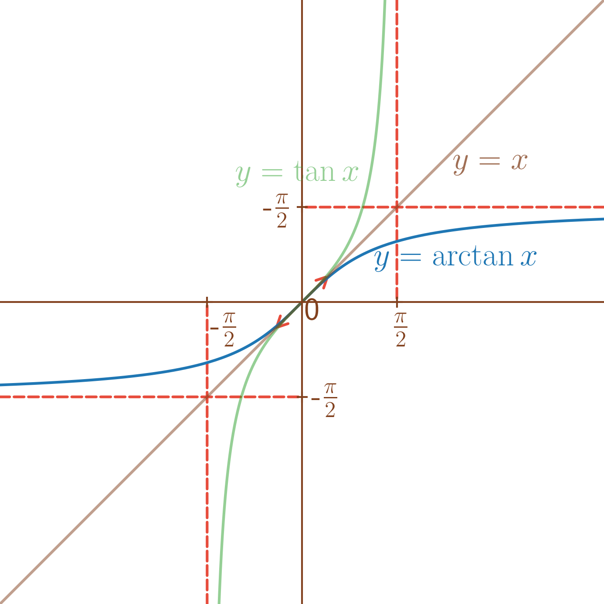
Etude de \(\mathop{\mathrm{Arctan}}(tan)\).
On peut considérer \(f : x \in D_{\tan} \mapsto \mathop{\mathrm{Arctan}}(\tan x)\).
Comme discuté précédemment, en général, \(\mathop{\mathrm{Arccos}}(\tan x) \neq x\).
En revanche, \(f\) est \(\pi\)-périodique, et il suffit donc de la déterminer sur \(\left]-\frac{\pi}{2},\frac{\pi}{2}\right[\).
Or, précisément pour \(x \in \left]-\frac{\pi}{2},\frac{\pi}{2}\right[, f(x) = \mathop{\mathrm{Arctan}}(\tan x) = x\).
On peut donc tracer le graphe de \(f\) par \(pi\)-périodicité.
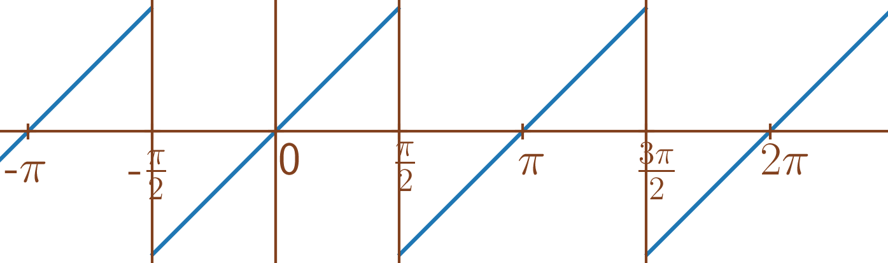
Utilisation de \(\mathop{\mathrm{Arctan}}\) pour les complexes.
Soit \(z \in \mathbb{C}^\star\) et \(\theta\) l’unique argument de \(z\) dans \(\left[-\frac{\pi}{2},\frac{3\pi}{2}\right[\). On note aussi \(z = a+ib\) avec \(a,b \in \mathbb{R}\).
On a donc \(z = |z|(\cos \theta +i \sin \theta) \iff \left\{\begin{array}{ll} a& = |z|\cos \theta \\ b& = |z|\sin \theta \end{array}\right..\)
Si \(a = 0\), \(\theta = \left\{\begin{array}{ll} \frac{\pi}{2}& \mbox{ si $b > 0$}\\ -\frac{\pi}{2}& \mbox{ si $b < 0$} \end{array}\right..\)
Si \(a > 0\), \(\theta \in \left]-\frac{\pi}{2}, \frac{\pi}{2}\right[\) et \(\tan \theta = \frac{b}{a}\) donc \(\theta = \mathop{\mathrm{Arctan}}\left(\frac{b}{a}\right)\).
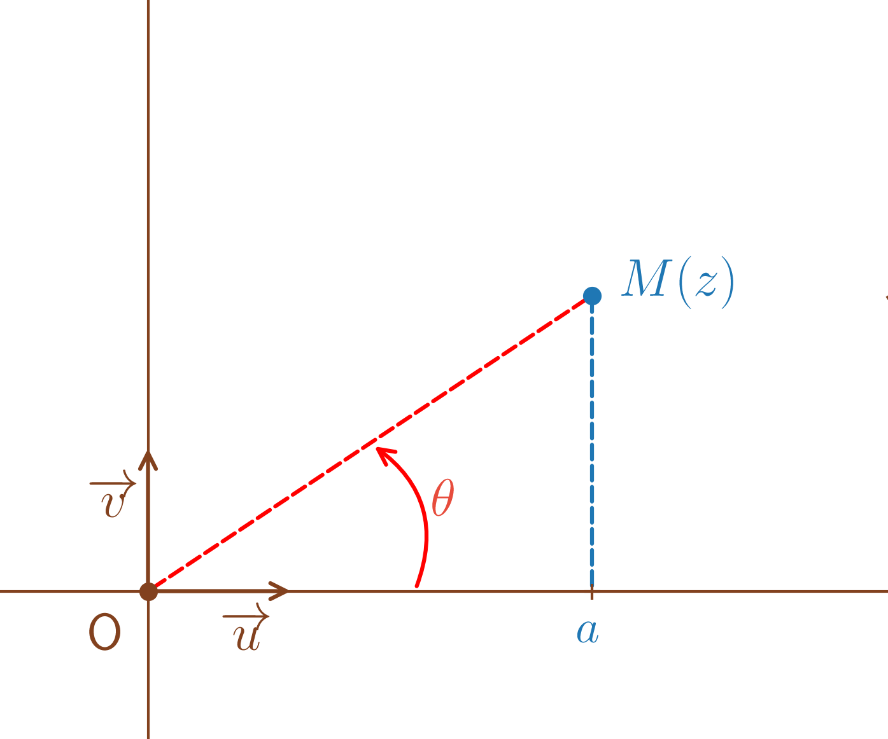
Si \(a < 0\), \(\theta \in \left]\frac{\pi}{2}, \frac{3\pi}{2}\right[\) et \(\tan \theta = \frac{b}{a}\) donc \(\theta = \pi+\mathop{\mathrm{Arctan}}\left(\frac{b}{a}\right)\).
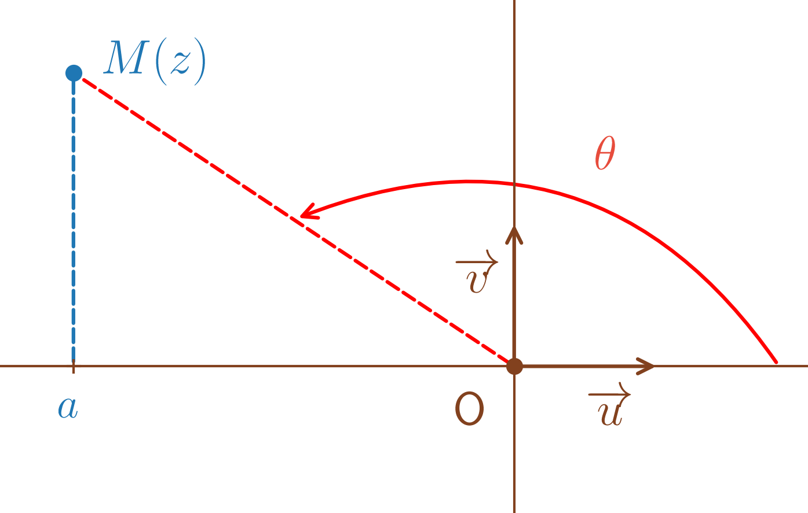
Utilisation de \(\mathop{\mathrm{Arctan}}\) pour calculer des primitives.
Exercice — Calculer les primitives de \(f: x > 0 \mapsto \frac{x^2+2}{(x-2)(x^2+4)}\).
Indication: Montrer qu’il existe \(a,b,c \in \mathbb{R}\) tels que \(\frac{x^2+2}{(x-2)(x^2+4)} = \frac{a}{x-2}+\frac{bx+c}{x^2+4}\).
Corrigé — En suivant l’indication, après calculs, on a \(a = \frac{3}{4}, b = \frac{1}{4}, c = \frac{1}{2}\).
La primitive de \(f\) qui s’annule en \(1\) s’écrit
\[F(x) = \int_1^x f(x)dx = \frac{3}{4}\int_1^x \frac{1}{x-2}dx + \frac{1}{4}\int_1^x \frac{x}{x^2+4}dx + \frac{1}{2}\int_1^x \frac{1}{x^2+4}dx.\]
Or, \[\begin{aligned} \frac{3}{4}\int_1^x \frac{1}{x-2}dx & = \frac{3}{4}\left[\ln|x-2|\right]_1^x =\frac{3}{4} \ln|x-2| + \text{Cste} \\ \frac{1}{4}\int_1^x \frac{x}{x^2+4}dx & = \frac{1}{8}\left[\ln(x^2+4)\right]_1^x =\frac{1}{8} \ln(x^2+4) + \text{Cste} \\ \frac{1}{2}\int_1^x \frac{1}{x^2+4}dx & = \frac{1}{8}\int_1^x \frac{1}{1+\left(\frac{x}{2}\right)^2}dx = \frac{1}{4}\mathop{\mathrm{Arctan}}\left(\frac{x}{2}\right)+ \text{Cste} \end{aligned}\]
Donc les primitives de \(f\) s’écrivent \(x> 0 \mapsto \frac{3}{4} \ln|x-2| +\frac{1}{8} \ln(x^2+4)+\frac{1}{4}\mathop{\mathrm{Arctan}}\left(\frac{x}{2}\right)+ \text{Cste}\).
(Logarithme népérien) On définit la fonction logarithme népérien comme l’unique primitive de \(x \in \mathbb{R}^{+\star} \to \frac{1}{x} \in \mathbb{R}\) qui s’annule en \(1\) et on la note \(\ln\).
\(\forall x >0, \ln(x) = \int_1^x \frac{1}{t}dt\).
(Propriétés de \(\ln\))
\(\ln\) est strictement croissante sur \(\mathbb{R}^{+\star}\),
\(\forall x,x' \in \mathbb{R}^{+\star}\), \(\ln(xx') = \ln(x)+\ln(x')\).
\(\forall x \in \mathbb{R}^{+\star}\), \(\ln'(x) = \frac{1}{x} > 0\).
Soit \(x_0 \in \mathbb{R}^{+\star}\), on pose \(g_{x_0}: x\in \mathbb{R}^{+\star}\mapsto \ln(xx_0) \in \mathbb{R}\). Alors, \(g_{x_0}\) est dérivable sur \(\mathbb{R}^{+\star}\) avec pour \(x\in \mathbb{R}^{+\star}\), \(g_{x_0}'(x) = \frac{x_0}{xx_0} = \frac{1}{x}\).
Donc pour \(x\in \mathbb{R}^{+\star}\), \(g_{x_0}(x) = \ln(x) + C\) avec \(C \in \mathbb{R}\). De plus, \(g_{x_0}(1) = \ln(x_0) = \ln(1) + C = C\) donc \(C = \ln(x_0)\) et \(g_{x_0}(x) = \ln(xx_0) = \ln(x)+\ln(x_0)\).
\(\forall x \in \mathbb{R}^{+\star}, \ln\left(\frac{1}{x}\right) = -\ln(x)\),
\(\forall x,y \in \mathbb{R}^{+\star}, \ln\left(\frac{x}{y}\right) = \ln(x)-\ln(y)\),
\(\forall x \in \mathbb{R}^{+\star}, \forall n \in \mathbb{Z}\), \(\ln(x^n)=n\ln(x)\).
Pour \(x \in \mathbb{R}^{+\star}, \ln\left(\frac{x}{x}\right) = \ln(1) = 0 = \ln(x)+\ln\left(\frac{1}{x}\right)\).
Pour \(x,y \in \mathbb{R}^{+\star}, \ln\left(\frac{x}{y}\right) = \ln(x)+\ln\left(\frac{1}{y}\right) = \ln(x)-\ln(y)\).
Commençons par prouver le résultat par récurrence pour \(n \in \mathbb{N}, x \in \mathbb{R}^{+\star}\).
INITIALISATION : Pour \(n= 0\), \(\ln(x^0)= \ln(1) = (0\ln(x)\).
HÉRÉDITÉ : Soit \(n \in \mathbb{N}\), supposons \(\ln(x^n)=n\ln(x)\).
On a alors \(\ln(x^{n+1})=\ln(xx^{n}) = \ln(x)+\ln(x^n) \underbrace{=}_{\text{par hypothèse de récurrence}}\ln(x)+n\ln(x) = (n+1)\ln(x)\).
CONCLUSION : \(\forall n \in \mathbb{N}, \ln(x^n)=n\ln(x)\).
Pour \(n \in \mathbb{Z}\) tel que \(n < 0\) alors \(-n \in \mathbb{N}\). D’après ce qui précède, on a donc \(\ln(x^{-n})=-n\ln(x)\) donc \(\ln(x^n)=-\ln(x^{-n})=n\ln(x)\).
(Limites de \(\ln\) en \(0\) et \(+\infty\))
\(\ln(x) \underset{x\longrightarrow +\infty}{\longrightarrow} +\infty\),
\(\ln(x) \underset{x\longrightarrow 0^+}{\longrightarrow} -\infty\).
Comme nous le verrons dans un chapitre ultérieur, comme \(f\) est strictement croissante sur \(\mathbb{R}^{+\star}\), elle admet des limites, finies ou non, en \(0\) et en \(+\infty\).
Par l’absurde, si \(\ln\) admet une limite finie \(\ell \in \mathbb{R}\) en \(+\infty\) alors comme \(\ln(2x) = \ln(2)+\ln(x)\), en passant à la limite, \(\ell = \ln(2)+\ell \iff \ell = 0\). Ce qui est absurde car \(\ell \geq \ln(2) > 0\).
Pour \(x \in \mathbb{R}^{+\star}\), \(\ln\left(\frac{1}{x}\right) = -\ln(x)\) donc \(\lim_{x\longrightarrow 0^+} \ln(x) = -\lim_{x\longrightarrow +\infty} \ln(x) = -\infty\).
\(\ln\) est une bijection strictement croissante de \(\mathbb{R}^{+\star}\) dans \(\mathbb{R}\),
Il existe un unique \(x_0 \in \mathbb{R}^{+\star}\) tel que \(\ln(x_0) = 1\), noté \(e\).
Tableau de variation.
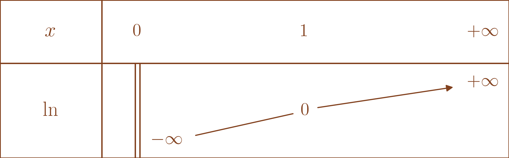
Allure de la courbe.
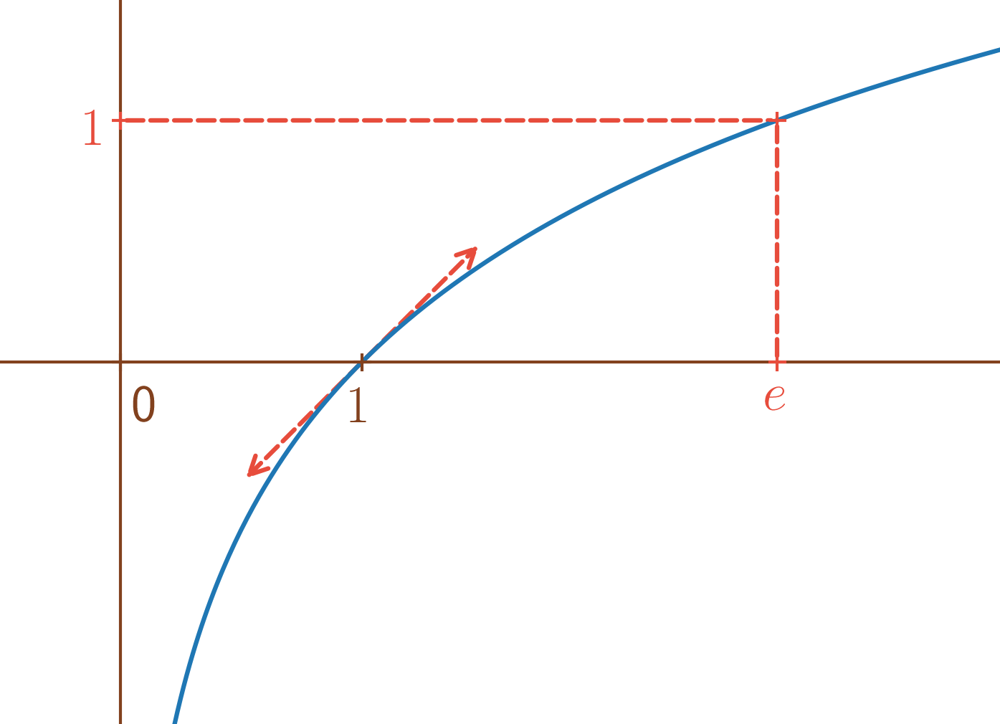
On verra plus tard dans ce chapitre que par "croissances comparées", \(\frac{\ln x}{x} \underset{x \longrightarrow + \infty}{\longrightarrow} 0\) et \(\ln x - 0x \underset{x \longrightarrow + \infty}{\longrightarrow} 0\) donc \(\ln\) n’admet pas d’asymptote en \(+\infty\). Sa croissance est trop lente.
(Fonction exponentielle) \(\ln\) est une bijection de \(\mathbb{R}^{+\star}\) dans \(\mathbb{R}\), la fonction réciproque de \(\ln\) est appelée la fonction exponentielle, notée \(\exp\).
On a donc \(\exp : \mathbb{R}\to \mathbb{R}^{+\star}\) et \(\left\{\begin{array}{ll} \forall y \in \mathbb{R}, \ln(\exp y) & = y \\ \forall x \in \mathbb{R}^{+\star}, \exp(\ln(x)) & = x. \end{array}\right.\).
De plus,
\[\begin{aligned} \ln 1 = 0 & \iff \exp(0) = 1, \ln e = 1 & \iff \exp(1) = e. \end{aligned}\]
(Exponentielle de la somme) \[\forall y,y' \in \mathbb{R}, \exp(y+y') = (\exp y)(\exp y').\]
Par définition, \(\exp(y+y')\) est l’unique réel \(t \in \mathbb{R}^{+\star}\) tel que \(\ln t = y+y'\).
Or,
\[\ln((\exp y)(\exp y')) = \ln(\exp y)+\ln(\exp y') = y+y'.\]
Donc \(\exp(y+y') = (\exp y)(\exp y')\).
\(\forall y \in \mathbb{R}, \exp(-y) = \frac{1}{\exp(y)}\),
\(\forall x,y \in \mathbb{R}, \exp(x-y) = \frac{\exp(x)}{\exp(y)}\),
\(\forall n \in \mathbb{Z}, \forall y \in \mathbb{R}, \left(\exp(y)\right)^n = \exp(ny)\)
Soit \(y \in \mathbb{R}\), \(\exp(y+(-y)) = \exp(y)\exp(-y) = \exp(0) = 1 \iff \exp(-y) = \frac{1}{\exp(y)}\).
Soient \(x,y \in \mathbb{R}\), \(\exp(x-y) = \exp(x+(-y)) = \exp(x)\exp(-y) = \frac{\exp(x)}{\exp(y)}\).
Commençons par prouver le résultat pour \(y \in \mathbb{R}, n \in \mathbb{N}\) par récurrence.
INITIALISATION : Pour \(n= 0\), \((\exp(y))^0= 1 = \exp(0y)\).
HÉRÉDITÉ : Soit \(n \in \mathbb{N}\), supposons \(\left(\exp(y)\right)^n = \exp(ny)\).
On a alors \(\exp((n+1)y) = \exp(ny+y) = \exp(ny)\exp(y) \underbrace{=}_{\text{par hypothèse de récurrence}} = \left(\exp(y)\right)^n\exp(y) = \left(\exp(y)\right)^{n+1}\).
CONCLUSION : \(\forall n \in \mathbb{N}, \left(\exp(y)\right)^n = \exp(ny)\).
Pour \(n \in \mathbb{Z}\) tel que \(n < 0\) alors \(-n \in \mathbb{N}\). D’après ce qui précède, on a donc \(\left(\exp(y)\right)^{-n} = \exp(-ny)\) donc \(\left(\exp(y)\right)^{-n} = \frac{1}{\exp(-ny)} = \exp(ny)\).
\(\exp\) vérifie des règles similaires aux puissances (\(\exp(0)=1,\exp(x+y) = \exp(x)\exp(y), \ldots\)) En particulier, pour \(n \in \mathbb{Z}\), \(\exp(n) =\exp(1)^n = e^n\). Par conséquent, pour \(x \in \mathbb{R}\), on définit \(e^x := \exp(x)\).
(Dérivabilité de \(\exp\)) \(\exp\) est dérivable sur \(\mathbb{R}\) et pour tout \(y\in \mathbb{R}\), \(\exp'(y) = \exp(y) > 0\). En particulier, \(\exp\) est strictement croissante sur \(\mathbb{R}\).
\(\ln\) est dérivable sur \(\mathbb{R}^{+\star}\), avec une dérivée qui ne s’annule pas. Donc par le corrolaire [cor:derivee_reciproque], \(\exp\) est dérivable sur \(\mathbb{R}\) et \[\forall y \in \mathbb{R}, \exp'(y)= \frac{1}{\ln'(\exp(y))} = \exp(y).\]
(Limites de \(\exp\) en \(\pm \infty\))
\(\exp(y) \underset{y\longrightarrow +\infty}{\longrightarrow} +\infty\),
\(\exp(y) \underset{y\longrightarrow -\infty}{\longrightarrow} -0^+\).
En tant que fonction croissante (prouvé dans un chapitre ultérieur), la fonction \(\exp\) admet des limites (finies ou non) en \(\pm \infty\).
De plus,
\[\lim_{y \longrightarrow+\infty} \exp(y) = \lim_{x \longrightarrow+\infty} \exp(\ln(x)) =\lim_{x \longrightarrow+\infty}x = +\infty\]
et
\[\lim_{y \longrightarrow-\infty} \exp(y) = \lim_{x \longrightarrow0^+} \exp(\ln(x)) =\lim_{x \longrightarrow 0^+}x = 0^+.\]
Asymptote en \(+\infty\).
Pour rappel, on prouvera plus tard par croissances comparées que \(\frac{\ln x}{x} \underset{x \longrightarrow + \infty}{\longrightarrow} 0\).
Cela donne donc \[\lim_{y\longrightarrow +\infty} \frac{\exp(y)}{y} = \lim_{x\longrightarrow +\infty} \frac{\exp(\ln(x))}{\ln(x)} = \lim_{x\longrightarrow +\infty} \frac{1}{\frac{\ln x}{x}} = +\infty.\]
Donc \(\exp\) n’admet pas d’asymptote quand \(x\) tens vers \(+\infty\), sa croissance est trop rapide.
Représentation graphique.
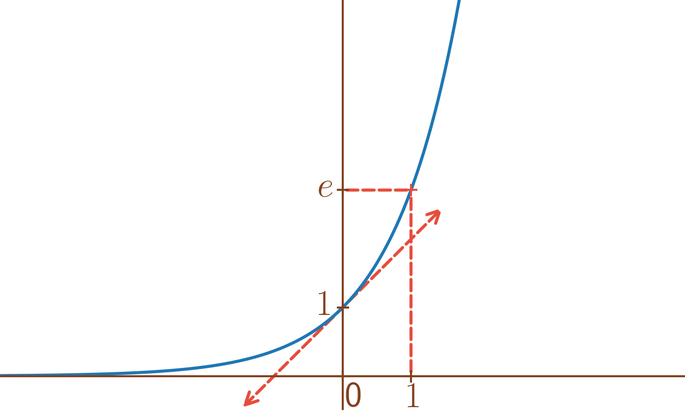
(Fonctions cosinus et sinus hyperboliques) Pour \(x\in \mathbb{R}\), on définit \[\mathop{\mathrm{sh}}(x) = \frac{e^x-e^{-x}}{2}\] appelée la fonction sinus hyperbolique et \[\mathop{\mathrm{ch}}(x) = \frac{e^x+e^{-x}}{2}\] appelée la fonction cosinus hyperbolique.
(Rappel des formules d’Euler) Pour rappel, pour \(x \in \mathbb{R}\), \[\begin{aligned} \sin x &= \frac{e^{ix}-e^{-ix}}{2i} \\ \cos x & = \frac{e^{ix}+e^{-ix}}{2}. \end{aligned}\]
(Propriétés de \(\mathop{\mathrm{sh}}\) et \(\mathop{\mathrm{ch}}\))
\(\mathop{\mathrm{sh}}(0) = 0\) et \(\mathop{\mathrm{ch}}(0) = 1\),
\(\mathop{\mathrm{sh}}\) est impaire et \(\mathop{\mathrm{ch}}\) est paire,
\(\mathop{\mathrm{sh}}\) et \(\mathop{\mathrm{ch}}\) sont dérivables sur \(\mathbb{R}\) avec pour \(x \in \mathbb{R}\), \[\mathop{\mathrm{sh}}'(x) = \mathop{\mathrm{ch}}(x), \quad \mathop{\mathrm{ch}}'(x) = \mathop{\mathrm{sh}}(x),\]
\(\mathop{\mathrm{sh}}\) est strictement croissante sur \(\mathbb{R}\) et \(\mathop{\mathrm{ch}}\) est strictement décroissante sur \(\mathbb{R}^{-}\) et strictement croissante sur \(\mathbb{R}^{+}\),
\(\mathop{\mathrm{sh}}(x) \underset{x\longrightarrow +\infty}{\longrightarrow} +\infty \text{ et }\mathop{\mathrm{sh}}(x) \underset{x\longrightarrow -\infty}{\longrightarrow} -\infty\),
\(\mathop{\mathrm{ch}}(x) \underset{x\longrightarrow +\infty}{\longrightarrow} +\infty \text{ et }\mathop{\mathrm{ch}}(x) \underset{x\longrightarrow -\infty}{\longrightarrow} +\infty\).
Pour \(x\in \mathbb{R}\), \(\mathop{\mathrm{sh}}(-x) = \frac{e^{-x}-e^{-(-x)}}{2} = \frac{e^{-x}-e^{x}}{2} = -\mathop{\mathrm{sh}}(x)\) et \(\mathop{\mathrm{ch}}(-x) = \frac{e^{-x}+e^{-(-x)}}{2} = \frac{e^{-x}+e^{x}}{2} = \mathop{\mathrm{ch}}(x)\),
Comme sommes de fonctions dérivables sur \(\mathbb{R}\), \(\mathop{\mathrm{sh}}\) et \(\mathop{\mathrm{ch}}\) sont dérivables sur \(\mathbb{R}\) et \(\mathop{\mathrm{sh}}'(x) = \frac{e^x-(-e^{-x})}{2} = \frac{e^{x}+e^{-x}}{2} =\mathop{\mathrm{ch}}(x)\) tandis que \(\mathop{\mathrm{ch}}'(x) = \frac{e^x+(-e^{-x})}{2} = \frac{e^{x}-e^{-x}}{2} =\mathop{\mathrm{sh}}(x)\).
\(\mathop{\mathrm{sh}}' = \mathop{\mathrm{ch}}\) qui est une fonction strictement positive donc \(\mathop{\mathrm{sh}}\) est strictement croissante sur \(\mathbb{R}\). En particulier, comme \(\mathop{\mathrm{sh}}(0) = 0\), \(\mathop{\mathrm{sh}}\) est strictement positive sur \(\mathbb{R}^{+\star}\) et strictement négative sur \(\mathbb{R}^{-\star}\). D’après ce qui précède, comme \(\mathop{\mathrm{ch}}'=\mathop{\mathrm{sh}}\), \(\mathop{\mathrm{ch}}\) est strictement décroissante sur \(\mathbb{R}^{-}\) et strictement croissante sur \(\mathbb{R}^{+}\).
\(\lim_{x\rightarrow +\infty} \mathop{\mathrm{sh}}(x)= \frac{1}{2}\lim_{x\longrightarrow +\infty} e^x - \frac{1}{2}\lim_{x\longrightarrow +\infty} e^{—x} = +\infty-0 = +\infty\) et \(\lim_{x\longrightarrow -\infty} \mathop{\mathrm{sh}}(x)= \frac{1}{2}\lim_{x\longrightarrow -\infty} e^x - \frac{1}{2}\lim_{x\longrightarrow -\infty} e^{—x} = 0-\infty = -\infty\).
\(\lim_{x\longrightarrow +\infty} \mathop{\mathrm{ch}}(x)= \frac{1}{2}\lim_{x\longrightarrow +\infty} e^x + \frac{1}{2}\lim_{x\longrightarrow +\infty} e^{—x} = +\infty+0 = +\infty\) et \(\lim_{x\longrightarrow -\infty} \mathop{\mathrm{ch}}(x)= \frac{1}{2}\lim_{x\longrightarrow -\infty} e^x + \frac{1}{2}\lim_{x\longrightarrow -\infty} e^{—x} = 0+\infty = +\infty\).
\[\forall x \in \mathbb{R}, \mathop{\mathrm{ch}}^2(x)-\mathop{\mathrm{sh}}^2(x) = 1.\]
Pour \(x\in \mathbb{R}\),
\[\mathop{\mathrm{ch}}^2(x)-\mathop{\mathrm{sh}}^2(x) = (\mathop{\mathrm{ch}}(x)+\mathop{\mathrm{sh}}(x))(\mathop{\mathrm{ch}}(x)-\mathop{\mathrm{sh}}(x)) = e^{x}e^{-x}= 1.\]
Tableaux de variations.
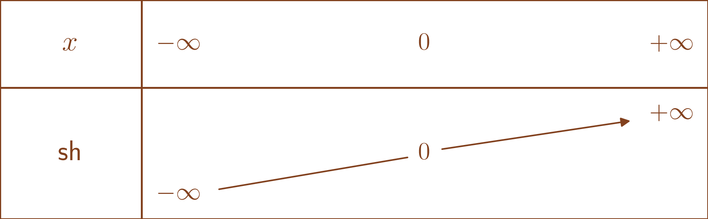
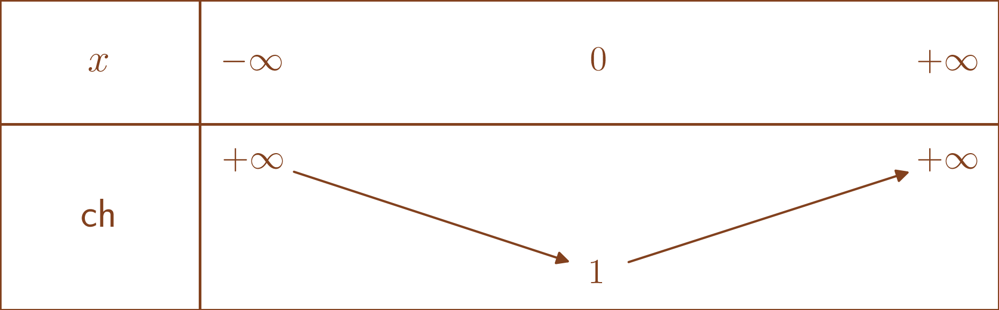
Branches infinies.
On montrera plus tard \(\frac{e^x}{x}\underset{x\longrightarrow +\infty}{\longrightarrow} 0\) et on a donc
\(\frac{\mathop{\mathrm{sh}}(x)}{x} = \frac{1}{2x}e^{x} -\frac{1}{2x}e^{-x} \underset{x\longrightarrow +\infty}{\longrightarrow} 0-0 = 0\) et \(\frac{\mathop{\mathrm{sh}}(x)}{x} = \frac{1}{2x}e^{x} -\frac{1}{2x}e^{-x} \underset{x\longrightarrow -\infty}{\longrightarrow} 0-0 = 0\) donc \(\mathop{\mathrm{sh}}\) n’admet pas d’asymptotes en \(\pm \infty\).
\(\frac{\mathop{\mathrm{ch}}(x)}{x} = \frac{1}{2x}e^{x} +\frac{1}{2x}e^{-x} \underset{x\longrightarrow +\infty}{\longrightarrow} 0+0 = 0\) et \(\frac{\mathop{\mathrm{ch}}(x)}{x} = \frac{1}{2x}e^{x} +\frac{1}{2x}e^{-x} \underset{x\longrightarrow +\infty}{\longrightarrow} 0+0 = 0\) donc \(\mathop{\mathrm{ch}}\) n’admet pas d’asymptotes en \(\pm \infty\).
Allure des graphes.
En introduisant \(f : x \in \mathbb{R}\mapsto \frac{e^x}{2}\), on a :
\(\forall x \in \mathbb{R}, \mathop{\mathrm{sh}}x \leq f(x) \leq \mathop{\mathrm{ch}}x\),
\(f(x)-\mathop{\mathrm{sh}}x \underset{x\longrightarrow +\infty}{\longrightarrow} 0\),
\(\mathop{\mathrm{ch}}x-f(x) \underset{x\longrightarrow +\infty}{\longrightarrow} 0\).
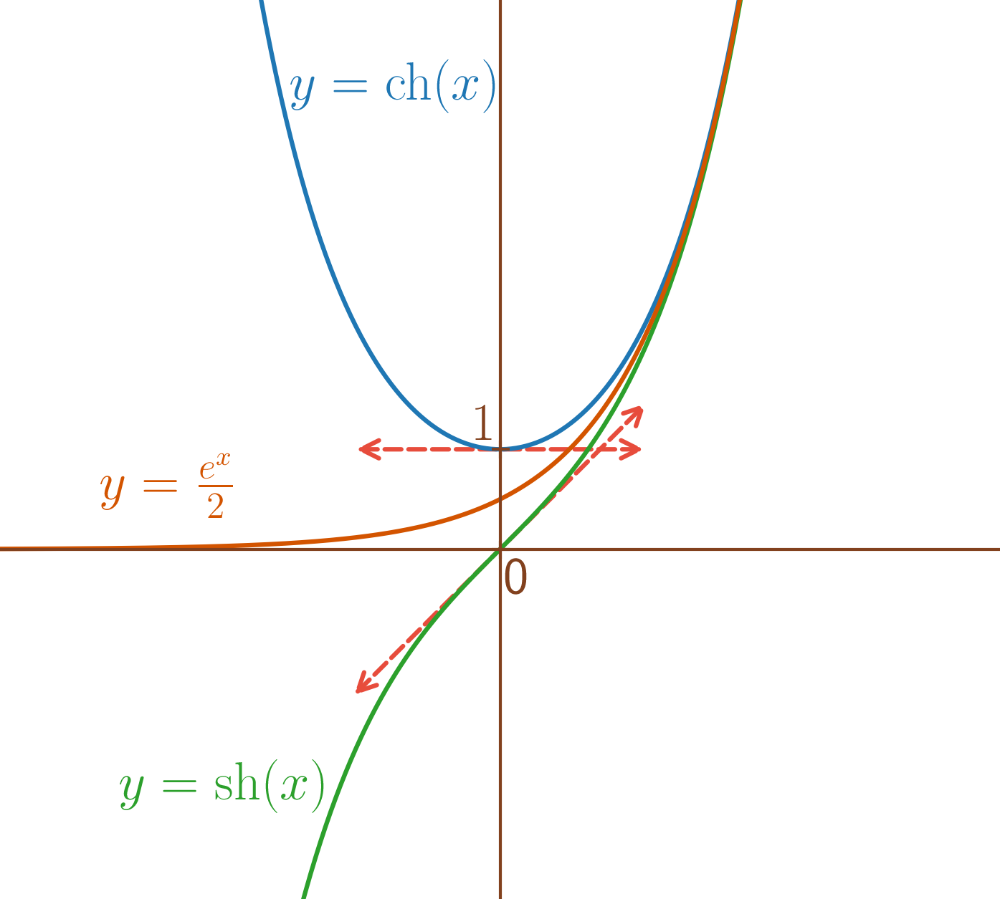
(Fonction tangente hyperbolique \(\mathop{\mathrm{th}}\)) Soit \(x\in \mathbb{R}\), \(\mathop{\mathrm{ch}}(x) \neq 0\) donc on peut définir la fonction \[\mathop{\mathrm{th}}(x) = \frac{\mathop{\mathrm{sh}}(x)}{\mathop{\mathrm{ch}}(x)}.\] \(\mathop{\mathrm{th}}\) est appelée la fonction tangente hyperbolique.
(Propriétés de la fonction \(\mathop{\mathrm{th}}\))
\(\mathop{\mathrm{th}}(0) = 0\),
\(\mathop{\mathrm{th}}\) est impaire,
\(\mathop{\mathrm{th}}\) est dérivable sur \(\mathbb{R}\) avec pour \(x \in \mathbb{R}\), \(\mathop{\mathrm{th}}(x) = 1-\mathop{\mathrm{th}}^2(x) = \frac{1}{\mathop{\mathrm{ch}}^2(x)}\),
\(\mathop{\mathrm{th}}\) est strictement croissante sur \(\mathbb{R}\),
\(\mathop{\mathrm{th}}(x) \underset{x\longrightarrow +\infty}{\longrightarrow} 1\text{ et }\mathop{\mathrm{th}}(x) \underset{x\longrightarrow -\infty}{\longrightarrow} -1\).
Pour \(x\in \mathbb{R}\), \(\mathop{\mathrm{th}}(-x) = \frac{\mathop{\mathrm{sh}}(-x)}{\mathop{\mathrm{ch}}(-x)}= \frac{-\mathop{\mathrm{sh}}(x)}{\mathop{\mathrm{ch}}(x)} = -\mathop{\mathrm{th}}(x)\).
Comme quotient de fonctions dérivables sur \(\mathbb{R}\), \(\mathop{\mathrm{th}}\) est dérivable sur \(\mathbb{R}\) et pour \(x\in \mathbb{R}\), \[\begin{aligned} \mathop{\mathrm{th}}'(x) & = \frac{\mathop{\mathrm{sh}}'(x)\mathop{\mathrm{ch}}(x)-\mathop{\mathrm{sh}}(x)\mathop{\mathrm{ch}}'(x)}{\mathop{\mathrm{ch}}^2(x)}\\ & = \frac{\mathop{\mathrm{ch}}^2(x)-\mathop{\mathrm{sh}}^2(x)}{\mathop{\mathrm{ch}}^2(x)} = \begin{cases} & = \frac{1}{\mathop{\mathrm{ch}}^2(x)} \\ & = \frac{\mathop{\mathrm{ch}}^2(x)\left(1-\frac{\mathop{\mathrm{sh}}^2 x}{\mathop{\mathrm{ch}}^2 x}\right)}{\mathop{\mathrm{ch}}^2(x)} =1-\mathop{\mathrm{th}}^2 x \end{cases}. \end{aligned}\]
\(\mathop{\mathrm{th}}' = \frac{1}{\mathop{\mathrm{ch}}^2} > 0\).
Pour \(x \in \mathbb{R}\), \(\mathop{\mathrm{th}}(x) = \frac{e^x-e^{-x}}{e^{x}+e^{-x}} = \frac{e^x(1-e^{-2x})}{e^{x}(1+e^{-2x})} = \frac{e1-e^{-2x}}{1+e^{-2x}} \underset{x\longrightarrow +\infty}{\longrightarrow} 1\).
Ensuite, par imparité, \(\mathop{\mathrm{th}}(x) \underset{x\longrightarrow -\infty}{\longrightarrow} -1\).
Tableau de signe.
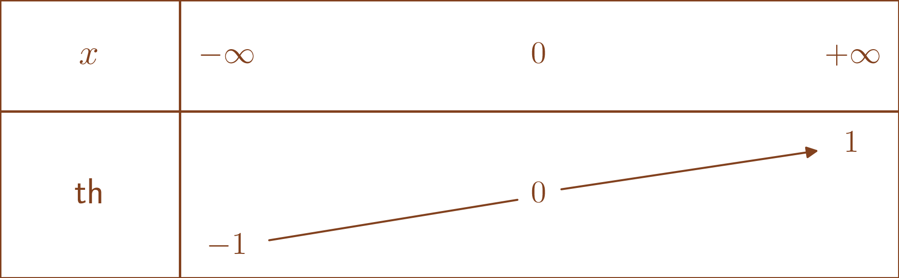
Allure du graphe.
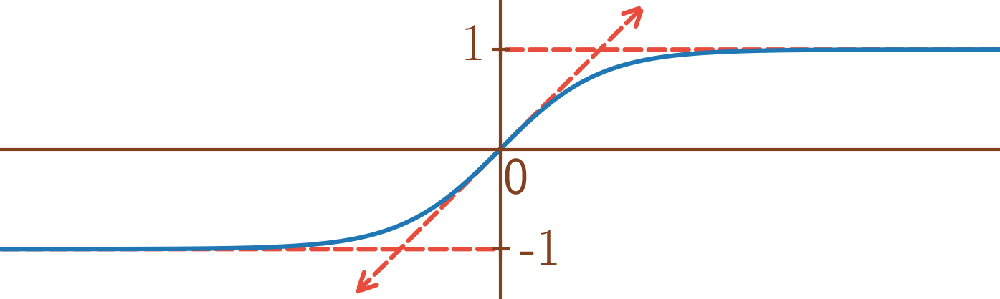
Soit \(x\in \mathbb{R}, n \in \mathbb{N}\), on peut considérer \(x^n = \underbrace{x \times x \times \ldots \times x}_{n \text{ fois}}\). On a alors pour \(x >0\), \(x = e^{\ln(x)}\) donc \(x^n = e^{n\ln(x)}\). On étend donc la définition de la puissance comme ci-dessous.
(Fonctions puissances) Soit \(\alpha \in \mathbb{R}\) et \(x \in \mathbb{R}^{+\star}\), on pose \(x^\alpha = e^{\alpha\ln(x)}\).
Pour \(n \in \mathbb{N}^\star, x> 0\), on définit \(\sqrt[n]{x} = e^{\frac{1}{n}\ln(x)}\) comme étant la racine \(n\)-ième de \(x\), elle vérifie \((\sqrt[n]{x})^n = \left(e^{\frac{1}{n}\ln(x)}\right)^n = e^{\frac{n}{n}\ln(x)} = e^{\ln(x)} = x\).
Dans la suite, pour \(\alpha \in \mathbb{R}\), on considère \(f_{\alpha} : x \in \mathbb{R}^{+\star}\mapsto x^{\alpha}\).
(Dérivabilité de \(f_\alpha\)) \(f_\alpha\) est dérivable sur \(\mathbb{R}^{+\star}\) et \[\forall x > 0, f_{\alpha}'(x) = \alpha x^{\alpha-1}.\]
Comme compositions de fonctions dérivables, \(f\) est dérivable sur \(\mathbb{R}^{+\star}\) et \[\forall x > 0, f_{\alpha}'(x) = \frac{\alpha}{x}e^{\alpha\ln(x)} = \alpha\frac{1}{e^{\ln x}}e^{\alpha\ln(x)} = \alpha e^{\alpha\ln(x)-\ln(x)} = \alpha e^{(\alpha-1)\ln(x)} = \alpha x^{\alpha-1}.\]
(Variations de \(f_\alpha\))
Si \(\alpha = 0\), \(f_0\) est constante sur \(\mathbb{R}^{+\star}\).
Si \(\alpha > 0\), \(f_\alpha\) est strictement croissante sur \(\mathbb{R}^{+\star}\).
Si \(\alpha < 0\), \(f_\alpha\) est strictement décroissante sur \(\mathbb{R}^{+\star}\).
Si \(\alpha = 0\), pour \(x\in \mathbb{R}^{+\star}\), \(f_0(x) = e^0 = 1\).
Si \(\alpha > 0\), pour \(x\in \mathbb{R}^{+\star}\), \(f_\alpha'(x) = \alpha e^{(\alpha-1)\ln x} > 0\).
Si \(\alpha < 0\), pour \(x\in \mathbb{R}^{+\star}\), \(f_\alpha'(x) = \alpha e^{(\alpha-1)\ln x} < 0\).
(Limites en \(0\) et \(+\infty\))
Si \(\alpha = 0\), \(f_0(x) \underset{x\longrightarrow 0}{\longrightarrow} 1\) et \(f_0(x) \underset{x\longrightarrow +\infty}{\longrightarrow} 1\).
Si \(\alpha > 0\), \(f_\alpha(x) \underset{x\longrightarrow 0}{\longrightarrow} 0\) et \(f_\alpha(x) \underset{x\longrightarrow +\infty}{\longrightarrow} +\infty\).
Si \(\alpha < 0\), \(f_\alpha(x) \underset{x\longrightarrow 0}{\longrightarrow} +\infty\) et \(f_\alpha(x) \underset{x\longrightarrow +\infty}{\longrightarrow} 0\).
Si \(\alpha = 0\), pour tout \(x\in \mathbb{R}^{+\star}\), \(f_0(x)=1\).
Si \(\alpha > 0\), pour tout \(x\in \mathbb{R}^{+\star}\), \(f_{\alpha}(x) = e^{\alpha \ln(x)}\). Or, \(\alpha\ln(x) \underset{x\longrightarrow 0}{\longrightarrow} -\infty\) et \(\alpha\ln(x) \underset{x\longrightarrow +\infty}{\longrightarrow} +\infty\). Donc \(f_\alpha(x) \underset{x\longrightarrow 0}{\longrightarrow} 0\) et \(f_\alpha(x) \underset{x\longrightarrow +\infty}{\longrightarrow} +\infty\).
Si \(\alpha < 0\), pour tout \(x\in \mathbb{R}^{+\star}\), \(f_{\alpha}(x) = e^{\alpha \ln(x)}\). Or, \(\alpha\ln(x) \underset{x\longrightarrow 0}{\longrightarrow} +\infty\) et \(\alpha\ln(x) \underset{x\longrightarrow +\infty}{\longrightarrow} -\infty\). Donc \(f_\alpha(x) \underset{x\longrightarrow 0}{\longrightarrow} +\infty\) et \(f_\alpha(x) \underset{x\longrightarrow +\infty}{\longrightarrow} 0\).
Si \(\alpha > 0\), on peut étendre \(f_\alpha\) en une fonction continue définie sur \(\mathbb{R}^{+}\) que l’on note encore \(f_{\alpha}\) en posant \(f_{\alpha}(0) = 0\).
Pour \(\alpha \geq 1\), \(f_\alpha\) devient même dérivable sur \(\mathbb{R}^{+}\) avec \(\begin{cases} f_{1}'(0) & = 1 \\ f_{\alpha}'(0) & = 0 \mbox{ si $\alpha > 1$.} \\ \end{cases}\)
Pour \(\alpha \in ]0,1[\), \(f_\alpha\) n’est pas dérivable en \(0\), elle admet une tangente verticale en \(0\).
Nous prendrons l’habitude de le faire dans les chapitres ultérieurs mais comme pour \(\alpha > 0\), \(f_\alpha(x) \underset{x\longrightarrow 0}{\longrightarrow} 0\), poser \(f_\alpha(0) = 0\) en fait une fonction continue.
De plus, pour \(h > 0\), \(\frac{f_\alpha(0+h)-f_\alpha(0)}{h} = \frac{e^{\alpha \ln(h)}}{e^{\ln(h)}} = e^{(\alpha-1)\ln h} = h^{\alpha-1}\).
et par la propriété précédente,
Pour \(\alpha -1 = 0 \iff \alpha = 1\), \(h^{\alpha-1} \underset{h \longrightarrow 0}{\longrightarrow} 1\),
Pour \(\alpha -1 > 0 \iff \alpha > 1\), \(h^{\alpha-1} \underset{h \longrightarrow 0}{\longrightarrow} 0\),
Pour \(\alpha -1 < 0 \iff \alpha < 1\), \(h^{\alpha-1} \underset{h \longrightarrow 0}{\longrightarrow} +\infty\).
Tableaux de signes.
| Pour \(\alpha > 0\), | Pour \(\alpha < 0\), |
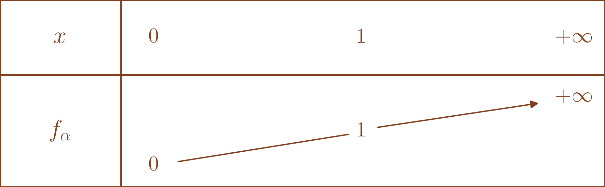 |
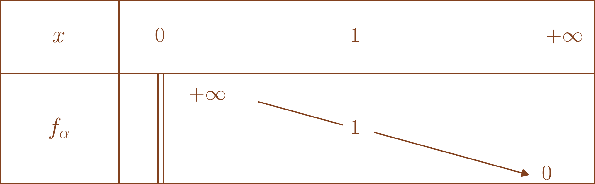 |
Asymptotes.
Pour \(x\in \mathbb{R}^{+\star}\), \(\alpha > 0\),
\(\frac{f_\alpha(x)}{x} = x^{\alpha-1}\)
Donc
Pour \(\alpha = 1, x \in \mathbb{R}^{+\star}\), \(f_{1}(x) = x\) et donc la courbe de \(f_1\) admet pour asymptote la droite \(y=x\) (la courbe elle-même).
Pour \(0 <\alpha < 1\), \(\alpha-1 < 0\) et \(\frac{f_\alpha(x)}{x} \underset{x \longrightarrow 0}{\longrightarrow} 0\) donc la droite n’admet pas d’asymptote quand \(x\) tend vers \(+\infty\) : sa croissance est trop lente.
Pour \(\alpha > 1\), \(\alpha-1 > 0\) et \(\frac{f_\alpha(x)}{x} \underset{x \longrightarrow 0}{\longrightarrow} +\infty\) donc la droite n’admet pas d’asymptote quand \(x\) tend vers \(+\infty\) : sa croissance est trop rapide.
Allure des courbes.

Règles de calculs.
(Règles de calculs des puissances) Pour \(\alpha, \beta \in \mathbb{R}\) et \(x,y \in \mathbb{R}^{+\star}\),
\(x^{\alpha+\beta} = x^\alpha x^\beta\),
\(\left(x^{\alpha}\right)^{\beta} = x^{\alpha \beta}\),
\(x^{-\alpha}=\frac{1}{x^\alpha}\),
\(\left(xy\right)^{\alpha} = x^{\alpha } y^{\alpha}\).
Pour \(\alpha, \beta \in \mathbb{R}\) et \(x,y \in \mathbb{R}^{+\star}\),
\(x^{\alpha+\beta} = e^{(\alpha+\beta)\ln x} = e^{\alpha \ln x + \beta \ln x} = e^{\alpha \ln x}e^{\beta \ln x} = x^\alpha x^\beta\),
\(\left(x^{\alpha}\right)^{\beta} = \left(e^{\alpha \ln x}\right)^{\beta} = e^{\beta \alpha \ln x} = x^{\alpha \beta}\),
\(x^{-\alpha}=e^{-\alpha \ln x}=\frac{1}{e^{\alpha \ln x}} = \frac{1}{x^\alpha}\),
\(x^{\alpha } y^{\alpha} = e^{\alpha \ln x}e^{\alpha \ln y} = e^{\alpha (\ln x+\ln y)} = e^{\alpha \ln(xy)} = \left(xy\right)^{\alpha}\).
Le résultat fondamental est le suivant :
\[\frac{\ln x}{x} \xrightarrow[x\to +\infty]{} 0^+.\]
On a \[\frac{\ln x}{x} = \frac{\ln\big((\sqrt{x})^2\big)}{\sqrt{x}\sqrt{x}} = \frac{2\ln(\sqrt{x})}{\sqrt{x}\sqrt{x}} = \frac{2}{\sqrt{x}} \cdot \frac{\ln(\sqrt{x})}{\sqrt{x}},\] Etudions \(f : t > 0\mapsto \frac{\ln t}{t}\). \(f\) est dérivable sur \(\mathbb{R}^{+\star}\) avec pour \(t\in \mathbb{R}^{+\star}\), \(f'(t) = \frac{1-\ln t}{t^2}\). On en déduit le tableau de variations suivant
On en déduit : \(\forall t\geq 1\), \(\displaystyle \frac{\ln t}{t} \leq \frac{1}{e}\) ; donc pour \(x\ge 1\), \[0 \le \frac{\ln x}{x} \le \frac{1}{e}\frac{2}{\sqrt{x}},\] d’où le résultat.
On en déduit :
\[x\ln x \xrightarrow[x\to 0^+]{} 0^{-}.\]
En écrivant pour \(x >0\), \(x\ln x = -\frac{\ln(1/x)}{1/x}\) et en tenant compte du fait que \(\frac{1}{x} \xrightarrow[x\to 0^+]{} +\infty.\), on a bien \(x\ln x \xrightarrow[x\to 0^+]{} 0\).
On a ensuite
\(\forall \alpha> 0, \beta>0\),
\(\frac{(\ln x)^\alpha}{x^\beta} \xrightarrow[x\to +\infty]{} 0^+.\)
\(x^\beta |\ln x|^\alpha \xrightarrow[x\to 0^+]{} 0^+.\)
\(\frac{e^{\alpha x}}{x^\beta} \xrightarrow[x\to +\infty]{} +\infty.\)
\(|x|^\beta e^{\alpha x} \xrightarrow[x\to -\infty]{} 0^+.\)
Pour \(x > 0\), \(\frac{(\ln x)^\alpha}{x^\beta} = \left(\frac{\ln x}{x^{\beta/\alpha}}\right)^\alpha\) et \(\frac{\ln x}{x^{\beta/\alpha}} = \frac{\alpha}{\beta} \frac{\ln\left(x^{\beta/\alpha}\right)}{x^{\beta/\alpha}},\) donc on a le résultat en utilisant \(x^\frac{\beta}{\alpha}\xrightarrow[x\to +\infty]{} +\infty\), \(\frac{\ln t}{t} \xrightarrow[t\to +\infty]{} 0\) et \(X^\alpha \xrightarrow[X\to +\infty]{} 0\).
Pour \(x<1\), \(x^\beta |\ln x|^\alpha = \frac{(\ln(1/x))^\alpha}{(1/x)^\beta}.\)
Pour \(x > 0\), \(\frac{e^{\alpha x}}{x^\beta} = \frac{(e^x)^\alpha}{(\ln(e^x))^\beta}.\) En posant \(t=e^x\), on obtient \(\frac{t^\alpha}{(\ln t)^\beta} \xrightarrow[t\to +\infty]{} +\infty.\)
Pour \(x<0\), \(|x|^\beta e^{\alpha x} = \frac{(-x)^\beta}{(e^{-x})^\alpha}.\)
et on en déduit
\(\forall \alpha <0, \beta<0\),
\(\frac{(\ln x)^\alpha}{x^\beta} \xrightarrow[x\to +\infty]{} +\infty.\)
\(x^\beta |\ln x|^\alpha \xrightarrow[x\to 0^+]{} +\infty.\)
\(\frac{e^{\alpha x}}{x^\beta} \xrightarrow[x\to +\infty]{} 0^+.\)
\(|x|^\beta e^{\alpha x} \xrightarrow[x\to -\infty]{} +\infty.\)
On peut retenir "face aux puissances de \(x\), les puissances de \(\ln\) perdent et n’imposent pas leurs limites en \(+\infty\) et \(0\)" et "face aux puissances de \(x\), les puissances d’\(\exp\) gagnent et imposent leurs limites en \(\pm\infty\)."
⚠️ Et si on veut calculer la limite de \(\left(1+\frac{1}{x}\right)^x\) en \(+\infty\) ?
Pour \(x > 0\), \(\left(1+\frac{1}{x}\right)^x = e^{x\ln\left(1+\frac{1}{x}\right)}.\)
En appliquant sans réfléchir la phrase "face aux puissances de \(x\), les puissances de \(\ln\) perdent et n’imposent pas leurs limites en \(+\infty\) et \(0\)", on pourrait penser que comme \(\ln\left(1+\frac{1}{x}\right) \xrightarrow[x\to +\infty]{} 0^+\) et \(x \xrightarrow[x\to +\infty]{} +\infty\) alors \(x\ln\left(1+\frac{1}{x}\right) \xrightarrow[x\to +\infty]{} +\infty\) donc \(\left(1+\frac{1}{x}\right)^x \xrightarrow[x\to +\infty]{} +\infty\) mais c’est faux. On ne rentre pas dans le cadre de la proposition précédente. On verra plus tard que \(\left(1+\frac{1}{x}\right)^x \xrightarrow[x\to +\infty]{} e\).